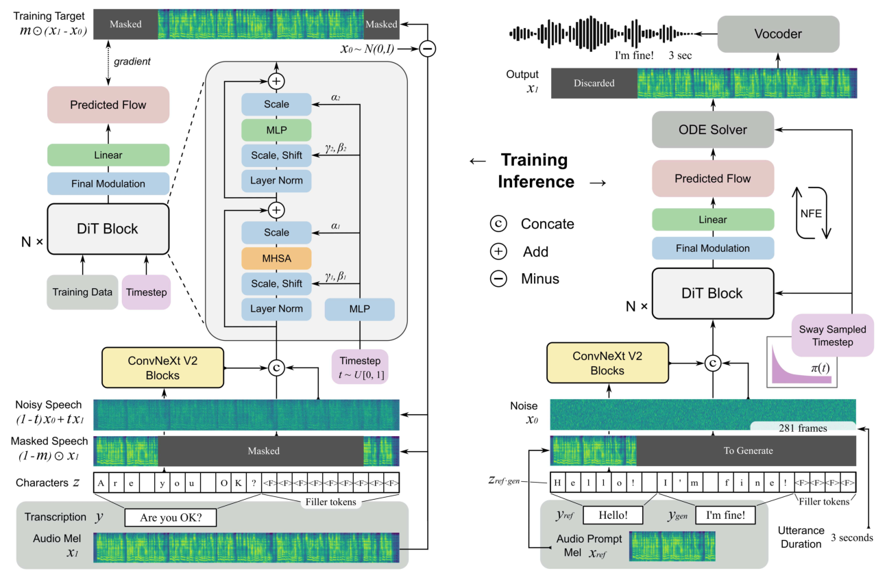
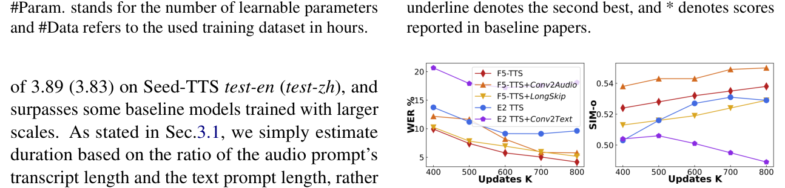
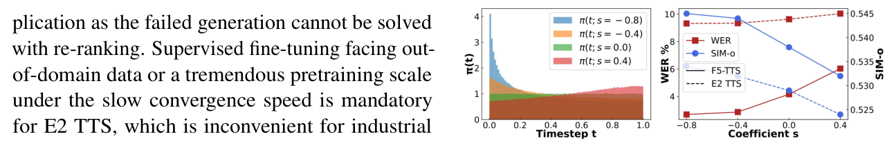

Yushen Chen1, Zhikang Niu1, Ziyang Ma1, Keqi Deng2 Chunhui Wang3, Jian Zhao3, Kai Yu1, Xie Chen1* 1MoE Key Lab of Artificial Intelligence, X-LANCE Lab, Shanghai Jiao Tong University 2University of Cambridge 3Geely Automobile Research Institute (Ningbo) Company Ltd.
{swivid,chenxie95}@sjtu.edu.cn
摘要Abstract
This paper introduces F5-TTS, a fully nonautoregressive text-to-speech system based on flow matching with Diffusion Transformer (DiT). Without requiring complex designs such as duration model, text encoder, and phoneme alignment, the text input is simply padded with filler tokens to the same length as input speech, and then the denoising is performed for speech generation, which was originally proved feasible by E2 TTS. However, the original design of E2 TTS makes it hard to follow due to its slow convergence and low robustness. To address these issues, we first model the input with ConvNeXt to refine the text representation, making it easy to align with the speech. We further propose an inference-time Sway Sampling strategy, which significantly improves our model’s performance and efficiency. This sampling strategy for flow step can be easily applied to existing flow matching based models without retraining. Our design allows faster training and achieves an inference RTF of 0.15, which is greatly improved compared to state-of-the-art diffusion-based TTS models. Trained on a public 100K hours multilingual dataset, our F5-TTS exhibits highly natural and expressive zero-shot ability, seamless code-switching capability, and speed control efficiency. We have released all codes and checkpoints to promote community development, at https://SWivid.github.io/F5-TTS/.
本文介绍 F5-TTS，一个基于流匹配（flow matching）与 Diffusion Transformer（DiT）的完全非自回归（NAR）文本转语音系统。它不需要时长模型、文本编码器和音素对齐等复杂设计，只需将文本输入用填充 token 补齐到与输入语音相同的长度，然后进行去噪以生成语音——这一思路最初由 E2 TTS 证明可行。然而，E2 TTS 的原始设计收敛缓慢且鲁棒性低，难以沿用。为解决这些问题，我们首先用 ConvNeXt 对输入进行建模以细化文本表示，使其更容易与语音对齐。我们进一步提出了一种推理期的 Sway Sampling 策略，显著提升了模型的性能与效率。这种针对流步骤（flow step）的采样策略可以方便地应用于已有的基于流匹配的模型，无需重新训练。我们的设计使训练更快，并实现了 0.15 的推理 RTF，相比最先进的扩散类 TTS 模型有大幅提升。在公开的 100K 小时多语言数据集上训练后，F5-TTS 展现出高度自然、富有表现力的零样本能力、无缝的语码混合能力以及高效的速度控制。我们已开源全部代码与模型权重以促进社区发展，地址为 https://SWivid.github.io/F5-TTS/。
1 引言Introduction
Recent research in Text-to-Speech (TTS) has experienced great advancement (Shen et al., 2018; Li et al., 2019; Ren et al., 2020; Kim et al., 2020, 2021; Popov et al., 2021; Wang et al., 2023b; Tan et al., 2024). With a few seconds of audio prompt, current TTS models are able to synthesize speech for any given text and mimic the speaker of audio prompt (Wang et al., 2023a; Zhang et al., 2023b).
近年来，文本转语音（TTS）研究取得了长足进步（Shen et al., 2018; Li et al., 2019; Ren et al., 2020; Kim et al., 2020, 2021; Popov et al., 2021; Wang et al., 2023b; Tan et al., 2024）。只需几秒钟的音频提示，现有 TTS 模型就能为任意给定文本合成语音，并模仿音频提示中的说话人（Wang et al., 2023a; Zhang et al., 2023b）。
*Corresponding author The synthesized speech can achieve high fidelity and naturalness that they are almost indistinguishable from human speech (Shen et al., 2023; Ju et al., 2024; Chen et al., 2024; Le et al., 2024).
（*通讯作者）合成语音可以达到极高的保真度与自然度，几乎与真人语音难以区分（Shen et al., 2023; Ju et al., 2024; Chen et al., 2024; Le et al., 2024）。
While autoregressive (AR) based TTS models exhibit an intuitive way of consecutively predicting the next token(s) and have achieved promising zeroshot TTS capability, the inherent limitations of AR modeling require extra efforts addressing issues such as inference latency and exposure bias (Song et al., 2024; Du et al., 2024a; Han et al., 2024; Xin et al., 2024; Peng et al., 2024). Moreover, the quality of speech tokenizer is essential for AR models to achieve high-fidelity synthesis (Zeghidour et al., 2021; Défossez et al., 2022; Wu et al., 2023; Yang et al., 2023; Zhang et al., 2023a; Bai et al., 2024; Niu et al., 2024). Thus, there have been studies exploring direct modeling in continuous space (Liu et al., 2024a; Li et al., 2024; Meng et al., 2024) to enhance synthesized speech quality recently.
尽管基于自回归（AR）的 TTS 模型以直观的方式逐个预测下一个 token，并已展现出很好的零样本 TTS 能力，但 AR 建模的固有局限需要额外的努力来解决推理延迟和曝光偏差（exposure bias）等问题（Song et al., 2024; Du et al., 2024a; Han et al., 2024; Xin et al., 2024; Peng et al., 2024）。此外，语音分词器（tokenizer）的质量对 AR 模型实现高保真合成至关重要（Zeghidour et al., 2021; Défossez et al., 2022; Wu et al., 2023; Yang et al., 2023; Zhang et al., 2023a; Bai et al., 2024; Niu et al., 2024）。因此，近期有研究探索直接在连续空间中建模（Liu et al., 2024a; Li et al., 2024; Meng et al., 2024），以提升合成语音的质量。
Although AR models demonstrate impressive zero-shot performance as they perform implicit duration modeling and can leverage diverse sampling strategies, non-autoregressive (NAR) models benefit from fast inference through parallel processing, and effectively balance synthesis quality and latency. Notably, diffusion models (Ho et al., 2020; Song et al., 2020) contribute most to the success of current NAR speech models (Shen et al., 2023; Ju et al., 2024). In particular, Flow Matching with Optimal Transport path (FM-OT) (Lipman et al., 2022) is widely used in recent research fields not only text-to-speech (Le et al., 2024; Guo et al., 2024b; Mehta et al., 2024; Lee et al., 2024; Eskimez et al., 2024) but also image generation (Esser et al., 2024) and music generation (Fei et al., 2024).
AR 模型之所以零样本表现出色，是因为它们进行隐式的时长建模并能利用多样的采样策略；而非自回归（NAR）模型则通过并行处理实现快速推理，在合成质量与延迟之间取得有效平衡。值得注意的是，扩散模型（Ho et al., 2020; Song et al., 2020）是当前 NAR 语音模型成功的最大功臣（Shen et al., 2023; Ju et al., 2024）。特别是带最优传输路径的流匹配（FM-OT）（Lipman et al., 2022），不仅在文本转语音（Le et al., 2024; Guo et al., 2024b; Mehta et al., 2024; Lee et al., 2024; Eskimez et al., 2024），还在图像生成（Esser et al., 2024）和音乐生成（Fei et al., 2024）等研究领域被广泛使用。
Unlike AR-based models, the alignment modeling between input text and synthesized speech is crucial and challenging for NAR-based models. While NaturalSpeech 3 (Ju et al., 2024) and Voicebox (Le et al., 2024) use frame-wise phoneme
与基于 AR 的模型不同，输入文本与合成语音之间的对齐建模对基于 NAR 的模型而言既关键又具挑战性。NaturalSpeech 3（Ju et al., 2024）和 Voicebox（Le et al., 2024）使用帧级音素对齐，

图Figure 1: An overview of F5-TTS training (left) and inference (right). The model is trained on the text-guided speech-infilling task and condition flow matching loss. The input text is converted to a character sequence, padded with filler tokens to the same length as input speech, and refined by ConvNeXt V2 blocks before concatenation with speech input. The inference leverages Sway Sampling for flow steps, with the model and an ODE solver to generate speech from sampled noise.
图 1：F5-TTS 训练（左）与推理（右）概览。模型在文本引导的语音填充任务上以条件流匹配损失训练。输入文本被转换为字符序列，用填充 token 补齐到与输入语音相同的长度，经 ConvNeXt V2 模块细化后再与语音输入拼接。推理时对流步骤采用 Sway Sampling，由模型与 ODE 求解器从采样的噪声生成语音。
alignment; Matcha-TTS (Mehta et al., 2024) adopts monotonic alignment search (Kim et al., 2020) and relies on a phoneme-level duration model; recent works find that introducing such rigid alignment between text and speech hinders the model from generating results with higher naturalness (Eskimez et al., 2024; Anastassiou et al., 2024).
而 Matcha-TTS（Mehta et al., 2024）采用单调对齐搜索（Kim et al., 2020）并依赖音素级时长模型；最近的研究发现，在文本与语音之间引入这种刚性对齐会阻碍模型生成更高自然度的结果（Eskimez et al., 2024; Anastassiou et al., 2024）。
E3 TTS (Gao et al., 2023a) abandons phonemelevel duration and applies cross-attention on the input sequence but yields limited audio quality. DiTTo-TTS (Lee et al., 2024) uses Diffusion Transformer (DiT) (Peebles and Xie, 2023) with crossattention conditioned on encoded text from a pretrained language model. To further enhance alignment, it uses the pretrained language model to finetune the neural audio codec, infusing semantic information into the generated representations. In contrast, E2 TTS (Eskimez et al., 2024), based on Voicebox (Le et al., 2024), adopts a simpler way, which removes the phoneme and duration predictor and directly uses characters padded with filler tokens to the length of mel spectrograms as input. This simple scheme also achieves very natural and realistic synthesized results. However, we found that robustness issues exist in E2 TTS for the text and speech alignment. Seed-TTS (Anastassiou et al., 2024) employs a similar strategy and achieves excellent results, though not elaborated in model details. In these ways of not explicitly modeling phoneme-level duration, models learn to assign the length of each word or phoneme according to the given total sequence length, resulting in improved prosody and rhythm.
E3 TTS（Gao et al., 2023a）放弃音素级时长，转而对输入序列施加交叉注意力，但音频质量有限。DiTTo-TTS（Lee et al., 2024）使用 Diffusion Transformer（DiT）（Peebles and Xie, 2023），以预训练语言模型编码的文本为条件做交叉注意力。为进一步增强对齐，它还用该预训练语言模型微调神经音频 codec，向生成的表示中注入语义信息。相比之下，基于 Voicebox（Le et al., 2024）的 E2 TTS（Eskimez et al., 2024）采用了更简单的方式：去掉音素与时长预测器，直接把用填充 token 补齐到 Mel 频谱图长度的字符序列作为输入。这个简单方案也能合成非常自然、逼真的结果。然而，我们发现 E2 TTS 在文本与语音对齐上存在鲁棒性问题。Seed-TTS（Anastassiou et al., 2024）采用了类似策略并取得了出色结果，只是没有详述模型细节。在这些不显式建模音素级时长的方法中，模型学会根据给定的总序列长度自行分配每个词或音素的长度，从而带来更好的韵律与节奏。
In this paper, we propose F5-TTS, a Fairytaler that Fakes Fluent and Faithful speech with Flow matching. Maintaining the simplicity of pipeline without phoneme alignment, duration predictor, text encoder, and semantically infused codec model, F5-TTS leverages the Diffusion Transformer with ConvNeXt V2 (Woo et al., 2023) to better tackle text-speech alignment during in-context learning. We stress the deep entanglement of semantic and acoustic features in the E2 TTS model design, which has inherent problems and will pose alignment failure issues that could not simply be solved with re-ranking. With in-depth ablation studies, our proposed F5-TTS demonstrates stronger robustness, in generating more faithful speech to the text prompt, while maintaining comparable speaker similarity. Additionally, we introduce an inferencetime sampling strategy for flow steps substantially improving naturalness, intelligibility, and speaker similarity of generation. This approach can be seamlessly integrated into existing flow matching based models without retraining.
本文提出 F5-TTS——一个用流匹配（Flow matching）捏造流利（Fluent）而忠实（Faithful）语音的「讲故事的人」（Fairytaler）。在保持流水线简洁、不用音素对齐、时长预测器、文本编码器和语义注入 codec 模型的前提下，F5-TTS 借助带 ConvNeXt V2（Woo et al., 2023）的 Diffusion Transformer，在上下文学习中更好地处理文本-语音对齐。我们强调 E2 TTS 模型设计中语义与声学特征的深度纠缠，这一固有问题会导致对齐失败，而这类失败无法简单地靠重排序（re-ranking）解决。通过深入的消融研究，我们提出的 F5-TTS 展现出更强的鲁棒性，能生成更忠实于文本提示的语音，同时保持相当的说话人相似度。此外，我们引入了一种推理期的流步骤采样策略，大幅提升生成语音的自然度、可懂度与说话人相似度。该方法无需重训即可无缝集成到已有的基于流匹配的模型中。
2 预备知识Preliminaries
2.1 流匹配Flow Matching
The Flow Matching (FM) objective is to match a probability path pt from a simple distribution p0, e.g., the standard normal distribution p(x) = N(x|0, I), to p1 approximating the data distribution q. In short, the FM loss regresses the vector field ut with a neural network vt as
流匹配（FM）的目标是 match 一条概率路径 pₜ：从简单分布 p₀（例如标准正态分布 p(x) = N(x|0, I)，即均值 0、方差 1）出发，到达逼近数据分布 q 的 p₁。简言之，FM 损失用神经网络 vₜ 回归向量场 uₜ，即 L_FM(θ) = E_{t,pₜ(x)} ‖vₜ(x) − uₜ(x)‖²（2 范数平方），其中 θ 是网络参数，t ∼ U[0, 1]，x ∼ pₜ(x)；vₜ 在整个流步骤与数据范围上训练，确保它学会处理从初始分布到目标分布的整个变换过程。
LFM(θ) = Et,pt(x) ∥vt(x) −ut(x)∥2 , (1)where θ parameterizes the neural network, t ∼ U[0, 1] and x ∼pt(x). vt is trained over the entire flow step and data range, ensuring it learns to handle the entire transformation process from the initial distribution to the target distribution.
简言之，FM 损失用神经网络 vₜ 回归向量场 uₜ，即 L_FM(θ) = E_{t,pₜ(x)} ‖vₜ(x) − uₜ(x)‖²（2 范数平方），其中 θ 是网络参数，t ∼ U[0, 1]，x ∼ pₜ(x)；vₜ 在整个流步骤与数据范围上训练，确保它学会处理从初始分布到目标分布的整个变换过程。
As we have no prior knowledge of how to approximate pt and ut, a conditional probability path pt(x|x1) = N(x | µt(x1), σt(x1)2I) is considered in actual training, and the Conditional Flow Matching (CFM) loss is proved to have identical gradients w.r.t. θ (Lipman et al., 2022). x1 is the random variable corresponding to training data. µ and σ is the time-dependent mean and scalar standard deviation of Gaussian distribution.
由于我们对如何逼近 pₜ 和 uₜ 没有先验知识，实际训练中考虑条件概率路径 pₜ(x|x₁) = N(x | μₜ(x₁), σₜ(x₁)²·I)（均值 μₜ(x1)、方差 σₜ(x1)²、协方差 σₜ(x1)2·I）；可以证明条件流匹配（CFM）损失关于 θ 的梯度与原目标相同（Lipman et al., 2022），其中 x₁ 是训练数据对应的随机变量，μ 和 σ 分别是高斯分布的时变均值与标量标准差。
Remember that the goal is to construct target distribution (data samples) from initial simple distribution, e.g., Gaussian noise. With the conditional form, the flow map ψt(x) = σt(x1)x + µt(x1) with µ0(x1) = 0 and σ0(x1) = 1, µ1(x1) = x1 and σ1(x1) = 0 is made to have all conditional probability paths converging to p0 and p1 at the start and end. The flow thus provides a vector field dψt(x0)/dt = ut(ψt(x0)|x1). Reparameterize pt(x|x1) with x0, we have
回忆一下，我们的目标是从初始的简单分布（如高斯噪声）构造出目标分布（数据样本）。在条件形式下，令流映射 ψₜ(x) = σₜ(x₁)x + μₜ(x₁)，且 μ₀(x₁) = 0、σ₀(x₁) = 1、μ₁(x₁) = x₁、σ₁(x₁) = 0，可使所有条件概率路径在起点与终点分别收敛到 p₀ 和 p₁。于是该流给出了向量场 dψₜ(x0)/dt = uₜ(ψₜ(x0)|x1)：从噪声 x0 出发（ψ0(x0) = x0），以数据 x1 为条件。用 x0 对 pₜ(x|x₁) 重参数化，可得（x₁ 为条件数据，t 从 0 到 1 插值）
LCFM(θ) = Et,q(x1),p(x0)∥vt(ψt(x0)) −ddtψt(x0)∥2.(2)Further leveraging Optimal Transport (OT) form ψt(x) = (1 −t)x + tx1, the OT-CFM loss is
（式 2）进一步利用最优传输（OT）形式 ψt(x) = (1 −t)x + t·x1，OT-CFM 损失为（公式主体见原文）。
LCFM(θ) = Et,q(x1),p(x0)∥vt((1 −t)x0 + tx1) −(x1 −x0)∥2.(3)To view in a more general way (Kingma and Gao, 2024), if formulating the loss in terms of log signalto-noise ratio (log-SNR) λ instead of flow step t, and parameterizing to predict x0 (ϵ, commonly stated in diffusion model) instead of predict x1−x0, the CFM loss is equivalent to the v-prediction (Salimans and Ho, 2022) loss with cosine schedule.
从更一般的视角看（Kingma and Gao, 2024），如果把损失用对数信噪比（log-SNR）λ 而非流步骤 t 来表述，并把预测目标参数化为 x₀（扩散模型中常表述为预测 ϵ）而非 x₁ − x₀，则 CFM 损失等价于余弦调度下的 v-预测（v-prediction）损失（Salimans and Ho, 2022）——两种写法描述的是同一个 x₀ 到 x₁ 的传输目标（v 仍是关于 x0 与 x1 的回归，梯度与 1 范数写法一致）。
For inference, given sampled noise x0 from initial distribution p0, flow step t ∈[0, 1] and condition with respect to generation task, the ordinary differential equation (ODE) solver (Chen, 2018) is used to evaluate ψ1(x0) the integration of dψt(x0)/dt with ψ0(x0) = x0. The number of function evaluations (NFE) is the times going through the neural network as we may provide multiple flow step values from 0 to 1 as input to approximate the integration. Higher NFE will produce more accurate results and certainly take more calculation time.
推理时，给定从初始分布 p₀ 采样的噪声 x₀、流步骤 t ∈ [0, 1] 以及生成任务的条件，使用常微分方程（ODE）求解器（Chen, 2018）对 dψₜ(x₀)/dt 积分，以 ψ₀(x₀) = x₀ 为初值求出 ψ₁(x₀)。函数评估次数（NFE）是穿过神经网络的次数——为了逼近积分，我们会提供多个从 0 到 1 的流步骤取值作为输入。更高的 NFE 会产生更精确的结果，当然也消耗更多计算时间。
2.2 无分类器引导Classifier-Free Guidance
Classifier Guidance (CG) is proposed by Dhariwal and Nichol (2021), functions by adding the gradient of an additional classifier, while such an explicit way to condition the generation process may have several problems. Extra training of the classifier is required and the generation result is directly affected by the quality of the classifier. Adversarial attacks might also occur as the guidance is introduced through the way of updating the gradient. Thus deceptive images with imperceptible details to human eyes may be generated, which are not conditional.
分类器引导（CG）由 Dhariwal and Nichol (2021) 提出，其做法是叠加一个外部分类器的梯度；但这种显式地为生成过程施加条件的方式可能存在若干问题。它需要额外训练分类器，且生成结果直接受分类器质量影响。由于引导是通过更新梯度的方式引入的，还可能发生对抗攻击。于是可能生成带有人眼难以察觉细节、实则无条件的欺骗性图像。
Classifier-Free Guidance (CFG) (Ho and Salimans, 2022) proposes to replace the explicit classifier with an implicit classifier without directly computing the explicit classifier and its gradient. The gradient of a classifier can be expressed as a combination of conditional generation probability and unconditional generation probability. By dropping the condition with a certain rate during training, and linear extrapolating the inference outputs with and without condition c, the final guided result is obtained. We could balance between fidelity and diversity of the generated samples with
无分类器引导（CFG）（Ho and Salimans, 2022）提出用一个隐式分类器替代显式分类器，而不直接计算显式分类器及其梯度。分类器的梯度可以表示为条件生成概率与无条件生成概率的组合。训练时以一定比例丢弃条件，推理时把有条件输出与无条件输出沿条件 c 做线性外推，即可得到最终的引导结果。我们可以在生成样本的保真度与多样性之间做权衡：
vt,CFG = vt(ψt(x0), c) + α(vt(ψt(x0), c) −vt(ψt(x0)))(4)in CFM case, where α is the CFG strength.1 1Note that the inference time will be doubled if CFG. Model vt will execute the forward process twice, once with condition, and once without.
（式 4）CFM 情形下，α 为 CFG 强度（脚注 1：注意使用 CFG 会使推理时间翻倍）。模型 vₜ 要执行两次前向：一次带条件，一次不带条件。
3 方法Method
This work aims to build a high-level text-to-speech synthesis system. We trained our model on the textguided speech-infilling task (Bai et al., 2022; Le et al., 2024). Based on recent research (Lee et al., 2024; Eskimez et al., 2024; Liu et al., 2024b), it is promising to train without phoneme-level duration predictor and can achieve higher naturalness in zero-shot generation deprecating explicit phonemelevel alignment. We propose our advanced architecture with faster convergence and more robust generation. We also propose an inference-time flow step sampling strategy, which significantly improves our model’s performance in faithfulness to reference text and speaker similarity.
本工作旨在构建一个高水平的文本转语音合成系统。我们在文本引导的语音填充（speech-infilling）任务上训练模型（Bai et al., 2022; Le et al., 2024）。基于近期研究（Lee et al., 2024; Eskimez et al., 2024; Liu et al., 2024b），不用音素级时长预测器、弃用显式音素级对齐地进行训练是可行的，并能在零样本生成中获得更高的自然度。我们提出了一种收敛更快、生成更鲁棒的改进架构。我们还提出了一种推理期的流步骤采样策略，显著提升模型在忠实于参考文本与说话人相似度方面的表现。
3.1 流水线与训练Pipeline Training
The infilling task is to predict a segment of speech given its surrounding audio and full text (for both surrounding transcription and the part to generate). For simplicity, we reuse the symbol x to denote an audio sample and y the corresponding transcript for a data pair (x, y). As shown in Fig.1 (left), the acoustic input for training is an extracted mel spectrogram features x1 ∈RF×N from the audio sample x, where F is mel dimension and N is the sequence length. In the scope of CFM, we pass in the model the noisy speech (1 −t)x0 + tx1 and the masked speech (1 −m) ⊙x1, where x0 denotes sampled Gaussian noise, t is sampled flow step, and m ∈{0, 1}F×N represents a binary temporal mask.
填充（infilling）任务是指：给定一段语音的上下文音频和完整文本（包括上下文转写与待生成部分），预测中间缺失的语音段。为简洁起见，我们沿用符号 x 表示音频样本、y 表示对应的转写文本，构成数据对 (x, y)。如 Fig.1（左）所示，训练时的声学输入是从音频样本 x 提取的 Mel 频谱图特征 x₁ ∈ R^{F×N}，其中 F 是梅尔维度、N 是序列长度。在 CFM 框架下，我们向模型传入加噪语音 (1 − t)x₀ + tx₁ 和掩码语音 (1 − m) ⊙ x₁，其中 x₀ 为采样的高斯噪声，t 为采样的流步骤，m ∈ {0, 1}^{F×N} 是时间维度上的二值掩码。
Following E2 TTS, we directly use alphabets and symbols for English. We opt for full pinyin to facilitate Chinese zero-shot generation. By breaking the raw text into such character sequence and padding it with filler tokens ⟨F⟩to the same length as mel frames, we form an extended sequence z with ci denoting the i-th character: z = (c1, c2, . . . , cM, ⟨F⟩, . . . , ⟨F⟩
沿用 E2 TTS 的做法，英文直接使用字母与符号。中文则采用完整拼音（含声调）以促进中文零样本生成。把原始文本拆成这样的字符序列，并用填充 token ⟨F⟩ 补齐到与梅尔帧相同的长度，即得到扩展序列 z，其中 cᵢ 表示第 i 个字符：z = (c₁, c₂, …, c_M, ⟨F⟩, …, ⟨F⟩)（⟨F⟩ 共 N − M 个，即第 1 段为字符、第 2 段为填充）。
|{z}(N−M) times
把原始文本拆成这样的字符序列，并用填充 token ⟨F⟩ 补齐到与梅尔帧相同的长度，即得到扩展序列 z，其中 cᵢ 表示第 i 个字符：z = (c₁, c₂, …, c_M, ⟨F⟩, …, ⟨F⟩)（⟨F⟩ 共 N − M 个，即第 1 段为字符、第 2 段为填充）。
). (5)The model is trained to reconstruct m ⊙x1 with (1−m)⊙x1 and z, which equals to learn the target distribution p1 in form of P(m⊙x1|(1−m)⊙x1, z) approximating real data distribution q. Inference To generate a speech with the desired content, we have the audio prompt’s mel spectrogram features xref, its transcription yref, and a text prompt ygen. Audio prompt serves to provide speaker characteristics and text prompt is to guide the content of generated speech.
模型的训练目标是：以 (1 − m) ⊙ x₁ 和 z 为条件重建 m ⊙ x₁，等价于学习形如 P(m⊙x₁ | (1−m)⊙x₁, z) 的目标分布 p₁ 去逼近真实数据分布 q。推理时，为生成指定内容的语音，我们拥有音频提示的 Mel 频谱图特征 x_ref、其转写文本 y_ref 以及一段文本提示 y_gen。音频提示提供说话人特征，文本提示则引导生成语音的内容。
The sequence length N, or duration, has now become a pivotal factor that necessitates informing the model of the desired length for sample generation. One could train a separate model to predict and deliver the duration based on xref, yref and ygen. Here we simply estimate the duration based on the ratio of the number of characters in ygen and yref. We assume that the sum-up length of characters is no longer than mel length, thus padding with filler tokens is done as during training.
序列长度 N（即时长）由此成为关键因素——必须告知模型期望的样本生成长度。一种做法是训练一个单独的模型，根据 x_ref、y_ref 和 y_gen 预测并输出时长。这里我们简单地按 y_gen 与 y_ref 的字符数之比来估计时长。我们假设字符总长度不超过梅尔长度，因此可以像训练时一样用填充 token 补齐。
To sample from the learned distribution, the converted mel features xref, along with concatenated and extended character sequence zref·gen serve as the condition in Eq.4. We have vt(ψt(x0), c) = vt((1−t)x0+tx1|xref, zref·gen),
为从学得的分布中采样，转换后的梅尔特征 x_ref 与拼接、扩展后的字符序列 z_ref·gen 一起作为 Eq.4 中的条件。于是有 vt(ψt(x0), c) = vt((1−t)x0 + t·x1 | x_ref, z_ref·gen)（式 6）。如图 1（右）所示，从采样的噪声 x0 出发，目标是流的另一端 x1。
(6)See from Fig.1 (right), we start from a sampled noise x0, and what we want is the other end of flow x1. Thus we use the ODE solver to gradually integrate from ψ0(x0) = x0 to ψ1(x0) = x1, given dψt(x0)/dt = vt(ψt(x0), xref, zref·gen). During inference, the flow steps are provided in an ordered way, e.g., uniformly sampled a certain number from 0 to 1 according to the NFE setting. After getting the generated mel with model vt and ODE solver, we discard the part of xref. Then we leverage a vocoder to convert the mel back to waveform.
于是有 vt(ψt(x0), c) = vt((1−t)x0 + t·x1 | x_ref, z_ref·gen)（式 6）。如图 1（右）所示，从采样的噪声 x0 出发，目标是流的另一端 x1。因此我们用 ODE 求解器，以 dψₜ(x₀)/dt = vₜ(ψₜ(x₀), x_ref, z_ref·gen) 从 ψ₀(x₀) = x₀（t 取 0 的端点）逐步积分到 ψ₁(x₀) = x₁（t 取 1 的端点）。推理时流步骤以有序方式给出，例如按 NFE 设定从 0 到 1 均匀采样一定数量的取值。用模型 vₜ 和 ODE 求解器得到生成的梅尔特征后，丢弃属于 x_ref 的部分。然后用声码器把梅尔特征还原为波形。
3.2 F5-TTSF5-TTS
E2 TTS directly concatenates the padded character sequence with input speech sequence, deeply entangling semantic and acoustic features with a large length gap of effective information, which is the underlying cause of hard training and poses several problems in a zero-shot scenario (Sec.5.1). To alleviate the problem of slow convergence and low robustness, we propose F5-TTS which accelerates training and inference and shows a strong robustness in generation. Also, an inference-time Sway Sampling is introduced, which allows inference faster (using less NFE) while maintaining performance. This sampling way of flow step can be directly applied to other CFM-based models without retraining. Model As shown in Fig.1, we use latent Diffusion Transformer (DiT) (Peebles and Xie, 2023) as backbone. To be specific, we use DiT blocks with zero-initialized adaptive Layer Norm (adaLN- zero). To enhance the model’s alignment ability, we also leverage ConvNeXt V2 blocks (Woo et al., 2023). Its predecessor ConvNeXt V1 (Liu et al., 2022) is used in many works and shows a strong temporal modeling capability in speech domain tasks (Siuzdak, 2023; Okamoto et al., 2024).
E2 TTS 直接把补齐后的字符序列与输入语音序列拼接，使语义与声学特征深度纠缠，且两者的有效信息长度差距很大——这正是训练困难的根因，并在零样本场景下引发若干问题（见 Sec.5.1）。为缓解收敛慢、鲁棒性低的问题，我们提出 F5-TTS：它加速训练与推理，并展现出很强的生成鲁棒性。此外，我们引入推理期的 Sway Sampling，可以在保持性能的同时让推理更快（使用更少的 NFE）。这种流步骤采样方式无需重训即可直接应用于其他基于 CFM 的模型。如 Fig.1 所示，我们使用隐空间 Diffusion Transformer（DiT）（Peebles and Xie, 2023）作为骨干。具体而言，我们使用带零初始化自适应 Layer Norm（adaLN-zero）的 DiT 模块。为增强模型的对齐能力，我们还引入 ConvNeXt V2 模块（Woo et al., 2023）。其前代 ConvNeXt V1（Liu et al., 2022）已被许多工作采用，并在语音领域任务中展现出很强的时序建模能力（Siuzdak, 2023; Okamoto et al., 2024）。
As described in Sec.3.1, the model input is character sequence, noisy speech, and masked speech. Before concatenation in the feature dimension, the character sequence first goes through ConvNeXt blocks. Experiments have shown that this way of providing individual modeling space allows text input to better prepare itself before later in-context learning. Unlike the phoneme-level force alignment done in Voicebox, a rigid boundary for text is not explicitly introduced. The semantic and acoustic features are jointly learned with the entire model. Not directly feeding the model with inputs of significant length gap as E2 TTS does, the proposed text refinement mitigates the impact of using inputs with mismatched effective information lengths, despite equal physical length in magnitude as E2 TTS.
如 Sec.3.1 所述，模型输入是字符序列、加噪语音和掩码语音。在特征维度上拼接之前，字符序列先经过 ConvNeXt 模块。实验表明，这种提供独立建模空间的方式，能让文本输入在随后的上下文学习之前先「准备好自己」。与 Voicebox 的音素级强制对齐不同，我们没有为文本显式引入刚性边界。语义与声学特征由整个模型联合学习。不像 E2 TTS 那样把有效信息长度差距悬殊的输入直接喂给模型，本文提出的文本细化缓解了这种输入有效信息长度不匹配的影响——尽管物理长度量级上与 E2 TTS 相同。
The flow step t for CFM is provided as the condition of adaLN-zero rather than appended to the concatenated input sequence in Voicebox. We found that an additional mean pooled token of text sequence for adaLN condition is not essential for the TTS task, maybe because the TTS task requires more rigorously guided results and the mean pooled text token is more coarse.
CFM 的流步骤 t 作为 adaLN-zero 的条件输入，而不是像 Voicebox 那样拼接到拼接后的输入序列上。我们发现，为 adaLN 条件再加入一个文本序列的均值池化 token 对 TTS 任务并非必需——或许是因为 TTS 任务要求结果受到更严格的引导，而均值池化的文本 token 过于粗糙。
We adopt some position embedding settings in Voicebox. The flow step is embedded with a sinusoidal position. The concatenated input sequence is added with a convolutional position embedding. We apply a rotary position embedding (RoPE) (Su et al., 2024) for self-attention rather than symmetric bi-directional ALiBi bias (Press et al., 2021). And for extended character sequence z, we also add it with an absolute sinusoidal position embedding before feeding it into ConvNeXt blocks.
我们沿用了 Voicebox 的一些位置编码设置。流步骤用正弦位置嵌入。拼接后的输入序列加上卷积位置嵌入。自注意力使用旋转位置嵌入（RoPE）（Su et al., 2024），而非对称的双向 ALiBi 偏置（Press et al., 2021）。对于扩展字符序列 z，在送入 ConvNeXt 模块之前还加上绝对正弦位置嵌入。
Compared with Voicebox and E2 TTS, we abandoned the U-Net (Ronneberger et al., 2015) style skip connection structure and switched to using DiT with adaLN-zero. Without a phoneme-level duration predictor and explicit alignment process, and nor with extra text encoder and semantically infused neural codec model in DiTTo-TTS, we give the text input a little freedom (individual modeling space) to let it prepare itself before concatenation and in-context learning with speech input. Sampling As stated in Sec.2.1, the CFM could be viewed as v-prediction with a cosine schedule. For image synthesis, Esser et al. (2024) propose to further schedule the flow step with a single-peak logit-normal (Atchison and Shen, 1980) sampling, in order to give more weight to intermediate flow steps by sampling them more frequently. We speculate that such sampling distributes the model’s learning difficulty more evenly over different flow step t ∈[0, 1].
与 Voicebox 和 E2 TTS 相比，我们放弃了 U-Net（Ronneberger et al., 2015）式的跳跃连接结构，改用带 adaLN-zero 的 DiT。既没有音素级时长预测器和显式对齐过程，也没有 DiTTo-TTS 中额外的文本编码器与语义注入的神经 codec 模型，我们给文本输入留了一点自由（独立的建模空间），让它在与语音输入拼接、进行上下文学习之前先自行准备。采样方面：如 Sec.2.1 所述，CFM 可视为余弦调度下的 v-预测。在图像合成中，Esser et al. (2024) 提出用单峰 logit-normal（Atchison and Shen, 1980）采样进一步调度流步骤，以便更频繁地采样中间流步骤、给予它们更大权重。我们推测，这种采样把模型的学习难度更均匀地分散到不同的流步骤 t ∈ [0, 1] 上。
In contrast, we train our model with traditional uniformly sampled flow step t ∼U[0, 1] but apply a non-uniform sampling during inference. In specific, we define a Sway Sampling function as
相比之下，我们训练时仍采用传统的均匀采样流步骤 t ∼ U[0, 1]，但在推理时施加非均匀采样。具体地，我们定义 Sway Sampling 函数为
fsway(u; s) = u + s · (cos(π2 u) −1 + u), (7)which is monotonic with coefficient s ∈[−1,
f_sway(u; s) = u + s · (cos(πu/2) − 1 + u)，它是单调的，系数 s ∈ [−1, 2/π − 2]（此处为跨页断行处的公式续行，按原文如实译出）。
2 π−2].We first sample u ∼U[0, 1], then apply this function to obtain sway sampled flow step t. With s < 0, the sampling is sway to left; with s > 0, the sampling is sway to right; and s = 0 case equals to uniform sampling. Fig.3 shows the probability density function of Sway Sampling on flow step t.
我们先采样 u ∼ U[0, 1]，再应用该函数得到摇摆采样后的流步骤 t。s < 0 时采样向左偏；s > 0 时采样向右偏；s = 0 时等价于均匀采样。Fig.3 展示了 Sway Sampling 在流步骤 t 上的概率密度函数。
Conceptually, CFM models focus more on sketching the contours of speech in the early stage (t →0) from pure noise and later focus more on the embellishment of fine-grained details. Therefore, the alignment between speech and text will be determined based on the first few generated results. With a scale parameter s < 0, we make model inference more with smaller t, thus providing the ODE solver with more startup information to evaluate more precisely in initial integration steps.
从概念上讲，CFM 模型在早期（t → 0）更专注于从纯噪声中勾勒语音的轮廓，后期则更专注于细粒度细节的修饰。因此，语音与文本之间的对齐取决于最初几步的生成结果。使用缩放系数 s < 0，我们让模型更多地在小 t 处推理，从而为 ODE 求解器提供更多起始信息，使初始积分步骤的求值更精确。
4 实验设置：数据集、训练与基线Experimental Setup Datasets
We utilize the in-the-wild multilingual speech dataset Emilia (He et al., 2024) to train our base models. After simply filtering out transcription failure and misclassified language speech, we retain approximately 95K hours of English and Chinese data. We also trained small models for ablation study and architecture search on WenetSpeech4TTS (Ma et al., 2024) Premium subset, consisting of a 945 hours Mandarin corpus. Base model configurations are introduced below, and small model configurations are in Appendix B.1. Three test sets are adopted for evaluation, which are LibriSpeech-PC test-clean (Meister et al., 2023), Seed-TTS test-en (Anastassiou et al., 2024) with 1088 samples from Common Voice (Ardila et al., 2019), and Seed-TTS test-zh with 2020 samples from DiDiSpeech (Guo et al., 2021)2. Most of the 2https://github.com/BytedanceSpeech/ seed-tts-eval previous English-only models are evaluated on different subsets of LibriSpeech test-clean while the used prompt list is not released, which makes fair comparison difficult. Thus we build and release a 4-to-10-second LibriSpeech-PC subset with 1127 samples to facilitate community comparisons. Training Our base models are trained to 1.2M updates with a batch size of 307,200 audio frames (0.91 hours), for over one week on 8 NVIDIA A100 80G GPUs. The AdamW optimizer (Loshchilov, 2017) is used with a peak learning rate of 7.5e5, linearly warmed up for 20K updates, and linearly decays over the rest of the training.
我们使用野外（in-the-wild）多语言语音数据集 Emilia（He et al., 2024）训练基础模型。简单过滤掉转写失败和语种误分类的语音后，我们保留了约 95K 小时的英文和中文数据。我们还在 WenetSpeech4TTS（Ma et al., 2024）Premium 子集——一个 945 小时的普通话语料——上训练小模型，用于消融研究和架构搜索。基础模型配置见下文，小模型配置见附录 B.1。评测采用三个测试集：LibriSpeech-PC test-clean（Meister et al., 2023）、来自 Common Voice（Ardila et al., 2019）含 1088 条样本的 Seed-TTS test-en（Anastassiou et al., 2024），以及来自 DiDiSpeech（Guo et al., 2021）含 2020 条样本的 Seed-TTS test-zh（见脚注 2）。（脚注 2：https://github.com/BytedanceSpeech/seed-tts-eval）以往大多数纯英文模型在 LibriSpeech test-clean 的不同子集上评测，且所用提示列表未公开，难以公平比较。因此我们构建并发布了一个含 1127 条样本、时长 4 至 10 秒的 LibriSpeech-PC 子集，方便社区比较。训练：基础模型训练 1.2M 步更新，批大小为 307,200 音频帧（0.91 小时），在 8 张 NVIDIA A100 80G GPU 上训练超过一周。优化器使用 AdamW（Loshchilov, 2017），峰值学习率 7.5e-5，线性预热 20K 步，随后在剩余训练中线性衰减。
We set 1 for the max gradient norm clip. The F5- TTS base model has 22 layers, 16 attention heads, 1024/2048 embedding/feed-forward network (FFN) dimension for DiT; and 4 layers, 512/1024 embedding/FFN dimension for ConvNeXt V2; in total 335.8M parameters. The reproduced E2 TTS, a 333.2M flat U-Net equipped Transformer, has 24 layers, 16 attention heads, and 1024/4096 embedding/FFN dimension. Both models use RoPE as mentioned in Sec.3.2, a dropout rate of 0.1 for attention and FFN, the same convolutional position embedding as in Voicebox(Le et al., 2024).
最大梯度范数裁剪设为 1。F5-TTS 基础模型的 DiT 部分为 22 层、16 个注意力头、嵌入/前馈网络（FFN）维度 1024/2048；ConvNeXt V2 部分为 4 层、嵌入/FFN 维度 512/1024；总计 335.8M 参数。复现的 E2 TTS 是一个 333.2M 参数的扁平 U-Net Transformer，24 层、16 个注意力头、嵌入/FFN 维度 1024/4096。两个模型都使用 Sec.3.2 提到的 RoPE，注意力与 FFN 的 dropout 率为 0.1，并采用与 Voicebox（Le et al., 2024）相同的卷积位置嵌入。
We directly use alphabets and symbols for English, use jieba3 and pypinyin4 to process raw Chinese characters to full pinyins. The character embedding vocabulary size is 2546, counting in the special filler token and all other language characters exist in the Emilia dataset as there are many code-switched sentences. For audio samples we use 100-dimensional log mel-filterbank features with 24 kHz sampling rate and hop length 256. A random 70% to 100% of mel frames is masked for infilling task training. For CFG (Sec.2.2) training, first the masked speech input is dropped with a rate of 0.3, then the masked speech again but with text input together is dropped with a rate of 0.2 (Le et al., 2024). We assume that the two-stage control of CFG training may have the model learn more with text alignment. Inference The inference process is mainly elaborated in Sec.3.1. We use the Exponential Moving Averaged (EMA) (Karras et al., 2024) weights for inference, and the Euler ODE solver for F5- TTS (midpoint for E2 TTS as described in Eskimez et al. (2024)). We use the pretrained vocoder Vocos (Siuzdak, 2023) to convert generated log mel 3https://github.com/fxsjy/jieba 4https://github.com/mozillazg/python-pinyin spectrograms to audio signals.
英文直接使用字母与符号；中文用 jieba（脚注 3）和 pypinyin（脚注 4）把原始汉字处理成完整拼音。字符嵌入词表大小为 2546，包含特殊填充 token 以及 Emilia 数据集中出现的所有其他语种字符——因为数据中有大量语码混合的句子。音频样本使用 100 维对数梅尔滤波器组特征，采样率 24 kHz，帧移 256。训练填充任务时，随机掩码 70% 到 100% 的梅尔帧。CFG（见 Sec.2.2）训练分两阶段：先以 0.3 的丢弃率丢弃掩码语音输入，再以 0.2 的丢弃率将掩码语音与文本输入一起丢弃（Le et al., 2024）。我们认为这种两阶段的 CFG 训练控制可以让模型更多地学习文本对齐。推理：推理过程已在 Sec.3.1 中详述。推理使用指数移动平均（EMA）（Karras et al., 2024）权重；F5-TTS 使用 Euler ODE 求解器（E2 TTS 按 Eskimez et al. (2024) 的描述使用中点法）。我们使用预训练的声码器 Vocos（Siuzdak, 2023）把生成的对数梅尔频谱图转换为音频信号。（脚注 3：https://github.com/fxsjy/jieba；脚注 4：https://github.com/mozillazg/python-pinyin）
Baselines We compare our models with leading TTS systems including, (mainly) autoregressive models: VALL-E 2 (Chen et al., 2024), MELLE (Meng et al., 2024), FireRedTTS (Guo et al., 2024a) and CosyVoice (Du et al., 2024b); non-autoregressive models: Voicebox (Le et al., 2024), NaturalSpeech 3 (Ju et al., 2024), DiTToTTS (Lee et al., 2024), MaskGCT (Wang et al., 2024), Seed-TTSDiT (Anastassiou et al., 2024) and our reproduced E2 TTS (Eskimez et al., 2024). Details of compared models see Appendix A. Metrics We measure the performances under cross-sentence task (Wang et al., 2023a; Le et al., 2024). We report Word Error Rate (WER) and speaker Similarity between generated and the original target speeches (SIM-o (Le et al., 2024)) for objective evaluation. For WER, we employ Whisperlarge-v3 (Radford et al., 2023) to transcribe English and Paraformer-zh (Gao et al., 2023b) for Chinese, following (Anastassiou et al., 2024). For SIM-o, we use a WavLM-large-based (Chen et al., 2022) speaker verification model to extract speaker embeddings for calculating the cosine similarity of synthesized and ground truth speeches. We use Comparative Mean Opinion Scores (CMOS) and Similarity Mean Opinion Scores (SMOS) for subjective evaluation. Details of subjective evaluations can be found in Appendix C.
基线：我们与领先的 TTS 系统比较，包括（主要是）自回归模型：VALL-E 2（Chen et al., 2024）、MELLE（Meng et al., 2024）、FireRedTTS（Guo et al., 2024a）和 CosyVoice（Du et al., 2024b）；非自回归模型：Voicebox（Le et al., 2024）、NaturalSpeech 3（Ju et al., 2024）、DiTTo-TTS（Lee et al., 2024）、MaskGCT（Wang et al., 2024）、Seed-TTS_DiT（Anastassiou et al., 2024）以及我们复现的 E2 TTS（Eskimez et al., 2024）。对比模型的详情见附录 A。指标：我们在跨句（cross-sentence）任务下评测性能（Wang et al., 2023a; Le et al., 2024）。客观评测报告生成语音与原始目标语音之间的词错误率（WER）和说话人相似度（SIM-o（Le et al., 2024)）。WER 方面，沿用（Anastassiou et al., 2024）的做法，英文用 Whisper-large-v3（Radford et al., 2023）转写，中文用 Paraformer-zh（Gao et al., 2023b）。SIM-o 方面，使用基于 WavLM-large（Chen et al., 2022）的说话人验证模型提取说话人嵌入，计算合成语音与真实语音的余弦相似度。主观评测使用比较平均意见分（CMOS）和相似度平均意见分（SMOS）。主观评测的细节见附录 C。
5 实验结果Experimental Results
Tab.1 and 2 show the main results of objective and subjective evaluations. We report the average score of three random seed generation results with our model and open-sourced baselines. We use by default a CFG strength of 2 and a Sway Sampling coefficient of −1 for our F5-TTS.
Tab.1 和 Tab.2 给出客观与主观评测的主要结果。我们报告的是本模型与开源基线在 3 个随机种子下生成结果的平均分。F5-TTS 默认使用 CFG 强度 2、Sway Sampling 系数 −1。
F5-TTS achieves a WER of 2.42 on LibriSpeechPC test-clean with 32 NFE, demonstrating its robustness in zero-shot generation. Inference with 16 NFE, F5-TTS gains an RTF of 0.15 while still supporting high-quality generation with a WER of 2.53. The reproduced E2 TTS shows an excellent speaker similarity (SIM) but much worse WER in the zero-shot scenario, indicating the inherent deficiency of alignment robustness.
F5-TTS 在 32 NFE 下于 LibriSpeech-PC test-clean 取得 2.42 的 WER，展现了零样本生成的鲁棒性。以 16 NFE 推理时，F5-TTS 取得 0.15 的 RTF，同时仍支持高质量生成，WER 为 2.53。复现的 E2 TTS 说话人相似度（SIM）出色，但零样本场景下 WER 差得多，说明其对齐鲁棒性存在固有缺陷。
From the evaluation results on the Seed-TTS test sets, F5-TTS behaves similarly with a close WER to ground truth and comparable SIM scores. It produces smooth and fluent speech in zero-shot generation with a CMOS of 0.31 (0.21) and SMOS Model #Param.
在 Seed-TTS 测试集上，F5-TTS 表现类似：WER 接近真实语音（ground truth），SIM 分数相当。（表格行+正文）零样本生成下语音平滑流畅，CMOS 0.31（0.21）、SMOS（后续照原文）；表头：Model × #Param.。
#Data WER(%)↓SIM-o↑RTF↓ LibriSpeech test-clean Ground Truth (2.2 hours subset)
表头：#Data × WER(%)↓ / SIM-o↑ / RTF↓——LibriSpeech test-clean；Ground Truth（2.2 小时子集）（后续照原文）。
2.2 0.754 -VALL-E 2-50K EN2.44 0.643 0.732MELLE-50K EN2.10 0.625 0.549MELLE-R2-50K EN2.14 0.608 0.276Voicebox 330M 60K EN1.9 0.662 0.64DiTTo-TTS 740M 55K EN2.56 0.627 0.162Ground Truth (40 samples subset)1.94 0.68 -Voicebox 330M 60K EN2.03 0.64 0.64NaturalSpeech 3 500M 60K EN1.94 0.67 0.296MaskGCT 1048M 100K Multi.
（表格行）MaskGCT 1048M、100K 小时、Multi.（后续照原文）。
2.634 0.687 -LibriSpeech-PC test-clean Ground Truth (1127 samples 2 hrs)2.23 0.69 -Vocoder Resynthesized2.32 0.66 -CosyVoice ∼300M 170K Multi.
（表格行）2.634/0.687/-；LibriSpeech-PC test-clean：Ground Truth（1127 条，2 小时）2.23/0.69/-；声码器重合成 2.32/0.66/-；CosyVoice 约 300M、170K 小时、Multi.（后续照原文）。
3.59 0.66 0.92FireRedTTS ∼580M 248K Multi.
（表格行）FireRedTTS ∼580M、248K 小时、Multi.（后续照原文）。
2.69 0.47 0.84E2 TTS (32 NFE) 333M 100K Multi.
（表格行）E2 TTS (32 NFE) 333M、100K 小时、Multi.（后续照原文）。
2.95 0.69 0.68F5-TTS (16 NFE) 336M 100K Multi.
（表格行）F5-TTS (16 NFE) 336M、100K 小时、Multi.（后续照原文）。
2.53 0.66 0.15F5-TTS (32 NFE) 336M 100K Multi.
（表格行）F5-TTS (32 NFE) 336M、100K 小时、Multi.（后续照原文）。
2.42 0.66 0.31Table 1: Comparison results on LibriSpeech(-PC) testclean. The Real-Time Factor (RTF) is computed with the inference time of 10s speech on NVIDIA RTX 3090. #Param. stands for the number of learnable parameters and #Data refers to the used training dataset in hours.
表 1：LibriSpeech(-PC) test-clean 上的对比结果。实时因子（RTF）按在 NVIDIA RTX 3090 上推理 10 秒语音的耗时计算。#Param. 表示可学习参数数量，#Data 表示所用训练数据的小时数。
of 3.89 (3.83) on Seed-TTS test-en (test-zh), and surpasses some baseline models trained with larger scales. As stated in Sec.3.1, we simply estimate duration based on the ratio of the audio prompt’s transcript length and the text prompt length, rather than relying on an extra duration predictor. It is also worth mentioning that Seed-TTS with the best result is trained with orders of larger model size and dataset (several million hours) than ours.
……在 Seed-TTS test-en（test-zh）上 SMOS 为 3.89（3.83），并超过了一些以更大数据规模训练的基线模型。（此句因表格穿插而断行，与 Tab.1 数值块穿插，其列 #Data / WER(%)↓ / SIM-o↑ / RTF↓ 的完整转写见 Tab.1 残块句，含 LibriSpeech test-clean 2.2 小时子集 Ground Truth 2.2 / 0.754、1127 条约 2 小时子集 2.23 / 0.69、E2 TTS 32 NFE 2.95 / 0.69 / 0.68、F5-TTS 16 NFE 2.53 / 0.66 / 0.15 与 32 NFE 2.42 / 0.66 / 0.31 等，数字与原文一致。）如 Sec.3.1 所述，我们简单地按音频提示转写长度与文本提示长度之比估计时长，而不依赖额外的时长预测器。值得一提的是，取得最好结果的 Seed-TTS 使用了比我们大若干数量级的模型规模和数据（数百万小时）。
A robustness test on ELLA-V (Song et al., 2024) hard sentences is further included in Appendix B.5. The ablation of vocoders and additional evaluation with a non-PC test set are in Appendix B.6. An analysis of training stability with varying data scales is in Appendix B.7.
针对 ELLA-V（Song et al., 2024）困难句的鲁棒性测试见附录 B.5。声码器消融以及在 non-PC 测试集上的附加评测见附录 B.6。不同数据规模下训练稳定性的分析见附录 B.7。
5.1 模型架构消融Ablation of Model Architecture
To clarify our F5-TTS’s efficiency and stress the limitation of E2 TTS. We conduct in-depth ablation studies. We trained small models (all around 155M parameters) to 800K updates on the WenetSpeech4TTS Premium 945 hours Mandarin dataset with half the batch size compared to base models. Configuration details see Appendix B.1.
为阐明 F5-TTS 的高效性并指出 E2 TTS 的局限，我们开展了深入的消融研究。我们在 WenetSpeech4TTS Premium 945 小时普通话数据集上训练小模型（均约 155M 参数）至 800K 步更新，批大小为基础模型的一半。配置细节见附录 B.1。
Fig.2 shows the overall trend of productive small models’ WER and SIM scores evaluated on SeedTTS test-zh. F5-TTS (32 NFE w/o SS) achieves a WER of 4.17 and a SIM of 0.54 at 800K upModel WER(%)↓SIM-o↑ CMOS↑SMOS↑ Seed-TTS test-en Ground Truth
图 2 展示了可量产小模型在 SeedTTS test-zh 上 WER 与 SIM 分数的总体趋势。F5-TTS (32 NFE w/o SS) 在 800K 更新步时取得 WER 4.17、SIM 0.54（表头：Model × WER(%)↓ / SIM-o↑ / CMOS↑ / SMOS↑——Seed-TTS test-en；Ground Truth，后续照原文）。
2.06 0.73 0.00 3.91Vocoder Resynthesized2.09 0.70 - -CosyVoice3.39 0.64 0.02 3.64FireRedTTS3.82 0.46 -1.46 2.94MaskGCT2.623* 0.717* - -Seed-TTSDiT1.733* 0.790* - -E2 TTS (32 NFE)2.19 0.71 0.06 3.81F5-TTS (16 NFE)1.89 0.67 0.16 3.79F5-TTS (32 NFE)1.83 0.67 0.31 3.89Seed-TTS test-zh Ground Truth1.26 0.76 0.00 3.72Vocoder Resynthesized1.27 0.72 - -CosyVoice3.10 0.75 -0.06 3.54FireRedTTS1.51 0.63 -0.49 3.28MaskGCT2.273* 0.774* - -Seed-TTSDiT1.178* 0.809* - -E2 TTS (32 NFE)1.97 0.73 -0.04 3.44F5-TTS (16 NFE)1.74 0.75 0.02 3.72F5-TTS (32 NFE)1.56 0.76 0.21 3.83Table 2: Results on two test sets, Seed-TTS test-en and test-zh. The boldface indicates the best result, the underline denotes the second best, and * denotes scores reported in baseline papers.
表 2：Seed-TTS test-en 与 test-zh 两个测试集上的结果。加粗为最佳结果，下划线为次佳，* 表示基线论文中报告的分数。

图Figure 2: Seed-TTS test-zh evaluation results of 155M small models trained with WenetSpeech4TTS Premium a 945 hours Mandarin Corpus.
图 2：在 WenetSpeech4TTS Premium（945 小时普通话语料）上训练的 155M 小模型，于 Seed-TTS test-zh 上的评测结果。
dates, while E2 TTS is 9.63 and 0.53. We were first faced with unsatisfactory results with reproduced E2 TTS in Mandarin. On the one hand, E2 TTS converges slowly; on the other hand, we found that E2 TTS consistently failed (unable to solve with re-ranking) on 7% test samples (WER>50%) all along the training process, speculated of larger distribution gap with train set. To disclose the possible reasons for E2 TTS’s deficiency, we investigate the models’ behaviors with different inputs. See from Tab.4 in Appendix B.2, by dropping the audio prompt, and synthesizing speech solely with the text prompt, E2 TTS is free of failures (F5-TTS also benefits but because of more standard output that is easier to be recognized by the ASR model). This phenomenon implied a deep entanglement of semantic and acoustic features within E2 TTS’s model design, and it greatly hinders real-world application as the failed generation cannot be solved with re-ranking. Supervised fine-tuning facing outof-domain data or a tremendous pretraining scale under the slow convergence speed is mandatory for E2 TTS, which is inconvenient for industrial deployment and a crushing burden for individuals.
在 800K 步更新时，F5-TTS（32 NFE，不用 SS）取得 WER 4.17、SIM 0.54，而 E2 TTS 为 9.63 和 0.53。我们最初在复现的中文 E2 TTS 上得到的是不理想的结果。一方面，E2 TTS 收敛缓慢；另一方面，我们发现 E2 TTS 在整个训练过程中始终在 7% 的测试样本（WER > 50%）上失败（重排序无法解决），推测是这些样本与训练集的分布差距更大。为揭示 E2 TTS 缺陷的可能原因，我们用不同输入考察模型的行为。见附录 B.2 的 Tab.4：丢弃音频提示、仅凭文本提示合成语音时，E2 TTS 不再出现失败（F5-TTS 也有受益，但原因是输出更标准、更容易被 ASR 模型识别）。这一现象暗示 E2 TTS 模型设计中语义与声学特征的深度纠缠；并且由于失败的生成无法靠重排序解决，它极大地阻碍了实际应用。面对域外数据的监督微调，或在收敛如此缓慢的前提下做巨大规模的预训练，对 E2 TTS 而言都是必须的——这给工业部署带来不便，对个人开发者更是压垮性的负担。
From Tab.3 GFLOPs, structures without many skip connections natively allow faster training and inference. However, pure adaLN DiT (F5- TTS−Conv2Text) failed to learn alignment given simply padded character sequences, while MMDiT (Esser et al., 2024) learned fast and collapsed fast, resulting in severe repeated utterance with wild timbre and prosody. We assume that the pure MMDiT structure is far too flexible for TTS task that requires faithful generation following guidance. Thus we focus on enhancing the modeling ability of DiT. Based on the concept of refining the input text representation to better align with speech modality, and keep the simplicity of system design, F5-TTS is proven effective. F5-TTS easily handles zeroshot generation, showing stronger robustness.
从 Tab.3 的 GFLOPs 看，不带大量跳跃连接的结构天然允许更快的训练与推理。然而，纯 adaLN DiT（F5-TTS−Conv2Text）在给定简单补齐的字符序列时未能学会对齐；而 MMDiT（Esser et al., 2024）学得快、崩得也快，产生严重的重复语句以及失控的音色与韵律。我们认为纯 MMDiT 结构对要求忠实跟随引导的 TTS 任务来说过于灵活。因此我们专注于增强 DiT 的建模能力。基于「细化输入文本表示以更好地与语音模态对齐」的理念，并保持系统设计的简洁，F5-TTS 被证明是有效的。F5-TTS 轻松应对零样本生成，展现出更强的鲁棒性。
We further ablate with adding the same branch for input speech (F5-TTS+Conv2Audio), and also conduct experiments to figure out whether the long skip connection and the refinement of input text are beneficial to the counterpart backbone, i.e. F5- TTS and E2 TTS, named F5-TTS+LongSkip and E2 TTS+Conv2Text respectively. From Fig.2, F5- TTS+Conv2Audio trades much alignment robustness (+1.61 WER) with a slightly higher speaker similarity (+0.01 SIM). The long skip connection structure can not simply fit into DiT to improve speaker similarity, while the ConvNeXt for input text refinement can not directly apply to the flat U-Net Transformer to improve WER as well, both showing significant degradation of performance.
我们进一步消融：给输入语音加同样的分支（F5-TTS+Conv2Audio）；并通过实验考察长跳跃连接与文本细化是否对对应的另一骨干（即 F5-TTS 与 E2 TTS）有益，分别记为 F5-TTS+LongSkip 和 E2 TTS+Conv2Text。从 Fig.2 看，F5-TTS+Conv2Audio 用大量对齐鲁棒性（+1.61 WER）换来了略高的说话人相似度（+0.01 SIM）。长跳跃连接结构无法简单嫁接到 DiT 上提升说话人相似度；用于文本细化的 ConvNeXt 也无法直接用于扁平 U-Net Transformer 来改善 WER——两者都出现显著的性能退化。
5.2 Sway Sampling 消融Ablation of Sway Sampling
It is clear from Fig.3 that a Sway Sampling with more negative s value further improves performance. Appendix B.3 with massive ablation results on base models, provides more evidence of the effectiveness of the proposed strategy.
从 Fig.3 可以清楚看到，s 值更负的 Sway Sampling 能进一步提升性能。附录 B.3 给出了基础模型上的大量消融结果，为所提策略的有效性提供了更多证据。
To be more concrete and intuitive, we conduct a "leak and override" experiment.
为更具体、直观地说明，我们设计了一个「泄露并覆盖」（leak and override）实验。
We first replace the Gaussian noise input x0 at inference time with a ground-truth-information-leaked input (1 −t′)x0 + t′x′ ref, where t′ = 0.1 and x′ ref is a duplicate of the audio prompt mel features. Then, we provide a text prompt different from the duplicated audio transcript and let the model continue
我们先把推理时的高斯噪声输入 x0 替换为泄露了真实信息的输入 (1 − t′)x0 + t′x′_ref（即 x0 占 (1 − t′)、x′_ref 占 t′），其中 t′ = 0.1，x′_ref 是音频提示梅尔特征的复制。然后给出一个与被复制音频转写不同的文本提示，让模型继续

图Figure 3: The probability density function of Sway Sampling with different coefficient s, and small models’ corresponding performance on Seed-TTS test-zh.
图 3：不同系数 s 下 Sway Sampling 的概率密度函数，以及小模型在 Seed-TTS test-zh 上的对应表现。
the subsequent inference (skip the flow steps before t′). The model succeeds in overriding leaked utterances and producing speech following the text prompt if Sway Sampling is used, and fails without. Uniformly sampled flow steps will have the model producing speech dominated by leaked information, speaking the duplicated audio prompt’s context. Similarly, a leaked timbre can be overridden with another speaker’s utterance as an audio prompt, leveraging Sway Sampling.
后续推理（跳过 t′ 之前的流步骤）。使用 Sway Sampling 时，模型成功覆盖了被泄露的话语、产出跟随文本提示的语音；不使用时则失败。均匀采样的流步骤会让模型产出被泄露信息主导的语音，说出被复制的音频提示内容。类似地，借助 Sway Sampling，还可以用另一位说话人的话语作为音频提示来覆盖被泄露的音色。
The experiment result is a shred of strong evidence proving that the early flow steps are crucial for sketching the silhouette of target speech based on given prompts faithfully, the later steps focus more on formed intermediate noisy output, where our sway-to-left sampling (s < 0) finds the profitable niche and takes advantage of it. We emphasize that our inference-time Sway Sampling can be easily applied to existing CFM-based models without retraining. And we will work in the future to combine it with training-time noise schedulers and distillation techniques to further boost efficiency.
实验结果是有力证据：早期流步骤对依据给定提示忠实地勾勒目标语音的轮廓至关重要，后期步骤更关注已成形的中间带噪输出——我们的左偏采样（s < 0）找到了有利位置并加以利用。我们强调，推理期的 Sway Sampling 无需重训即可方便地应用于已有的基于 CFM 的模型。未来我们会把它与训练期的噪声调度器和蒸馏技术结合，进一步提升效率。
6 结论Conclusion
This work introduces F5-TTS, a fully nonautoregressive text-to-speech system based on flow matching with diffusion transformer (DiT). With a tidy pipeline, literally text in and speech out, F5- TTS achieves state-of-the-art zero-shot ability compared to existing works trained on industry-scale data. We adopt ConvNeXt for text modeling and propose the test-time Sway Sampling strategy to further improve the robustness of speech generation and inference efficiency. Our design allows faster training and inference, by achieving a testtime RTF of 0.15, which is competitive with other heavily optimized TTS models of similar performance. We will open-source our code, and models, to enhance transparency and facilitate reproducible research in this area.
本工作介绍了 F5-TTS，一个基于流匹配与 Diffusion Transformer（DiT）的完全非自回归文本转语音系统。凭借整洁的流水线——真正意义上文本进、语音出——F5-TTS 的零样本能力达到最先进水平，可比拟那些在工业级数据规模上训练的现有工作。我们采用 ConvNeXt 进行文本建模，并提出测试期的 Sway Sampling 策略，进一步提升语音生成的鲁棒性与推理效率。我们的设计使训练与推理更快，测试期 RTF 达 0.15，与其他经过重度优化的同等性能 TTS 模型相比具有竞争力。我们将开源代码与模型，以增强透明度并促进该领域的可复现研究。
局限性Limitations
There are two limitations to this work. First, although F5-TTS accelerates the training and inference while maintaining the simplicity of the system through better structure design, the mel spectrogram sequence length is still much longer than the text modality. Therefore, research and employment of a more efficient and hopefully universal continuous representation compatible with highly expressive speech synthesis remains a critical direction and can further improve efficiency and performance. Second, although F5-TTS has great zeroshot generation ability and can deeply mimic the reference audio, it lacks fine-grained control of paralinguistic details, e.g. emotion, which is of great research and practical application value.
本工作有两点局限。第一，尽管 F5-TTS 通过更好的结构设计，在保持系统简洁的同时加速了训练与推理，Mel 频谱图的序列长度仍远长于文本模态。因此，研究并采用一种更高效、且有望通用的连续表示以兼容高表现力语音合成，仍是一个关键方向，并可进一步提升效率与性能。第二，尽管 F5-TTS 有很强的零样本生成能力、能深度模仿参考音频，但它缺乏对副语言细节（如情感）的细粒度控制，而这具有重要的研究价值与实际应用价值。
伦理声明Ethics Statements
This work is purely a research project. F5-TTS is trained on large-scale public multilingual speech data and could synthesize speech of high naturalness and speaker similarity. Given the potential risks in the misuse of the model, such as spoofing voice identification, it should be imperative to implement watermarks and develop a detection model to identify audio outputs.
本工作纯属研究项目。F5-TTS 在大规模公开多语言语音数据上训练，能够合成高度自然、说话人高度相似的语音。考虑到模型被滥用的潜在风险（例如欺骗声纹识别），应当必须实施水印技术并开发检测模型来识别音频输出。
ReferencesReferences
Philip Anastassiou, Jiawei Chen, Jitong Chen, Yuanzhe Chen, et al. 2024.
Seed-TTS: A family of highquality versatile speech generation models. arXiv preprint arXiv:2406.02430.
Rosana Ardila, Megan Branson, Kelly Davis, Michael Henretty, Michael Kohler, Josh Meyer, Reuben Morais, Lindsay Saunders, Francis M Tyers, and Gregor Weber. 2019. Common voice: A massivelymultilingual speech corpus.
arXiv preprint arXiv:1912.06670.
Jhon Atchison and Sheng M Shen. 1980.
Logisticnormal distributions: Some properties and uses. Biometrika, 67(2):261–272.
He Bai, Tatiana Likhomanenko, Ruixiang Zhang, Zijin Gu, Zakaria Aldeneh, and Navdeep Jaitly. 2024.
dMel: Speech tokenization made simple.
arXiv preprint arXiv:2407.15835.
He Bai, Renjie Zheng, Junkun Chen, Mingbo Ma, Xintong Li, and Liang Huang. 2022. A3t: Alignmentaware acoustic and text pretraining for speech synthesis and editing. In International Conference on Machine Learning, pages 1399–1411. PMLR.
Ricky T. Q. Chen. 2018. torchdiffeq.
Sanyuan Chen, Shujie Liu, Long Zhou, Yanqing Liu, Xu Tan, Jinyu Li, Sheng Zhao, Yao Qian, and Furu Wei. 2024. VALL-E 2: Neural codec language models are human parity zero-shot text to speech synthesizers. arXiv preprint arXiv:2406.05370.
Zhengyang Chen, Sanyuan Chen, Yu Wu, Yao Qian, Chengyi Wang, Shujie Liu, Yanmin Qian, and Michael Zeng. 2022. Large-scale self-supervised speech representation learning for automatic speaker verification.
In Proc. ICASSP, pages 6147–6151. IEEE.
Alexandre Défossez, Jade Copet, Gabriel Synnaeve, and Yossi Adi. 2022. High fidelity neural audio compression. arXiv preprint arXiv:2210.13438.
Prafulla Dhariwal and Alexander Nichol. 2021. Diffusion models beat gans on image synthesis. Advances in neural information processing systems, 34:8780–
8794.Chenpeng Du, Yiwei Guo, Hankun Wang, Yifan Yang, Zhikang Niu, Shuai Wang, Hui Zhang, Xie Chen, and Kai Yu. 2024a. VALL-T: Decoder-only generative transducer for robust and decoding-controllable textto-speech. arXiv preprint arXiv:2401.14321.
Zhihao Du, Qian Chen, Shiliang Zhang, Kai Hu, et al.
2024b. Cosyvoice: A scalable multilingual zeroshot text-to-speech synthesizer based on supervised semantic tokens. arXiv preprint arXiv:2407.05407.
Sefik Emre Eskimez, Xiaofei Wang, Manthan Thakker, Canrun Li, et al. 2024. E2 TTS: Embarrassingly easy fully non-autoregressive zero-shot TTS. arXiv preprint arXiv:2406.18009.
Patrick Esser, Sumith Kulal, Andreas Blattmann, Rahim Entezari, et al. 2024. Scaling rectified flow transformers for high-resolution image synthesis. In Proc.
ICML.
Zhengcong Fei, Mingyuan Fan, Changqian Yu, and Junshi Huang. 2024. Flux that plays music. arXiv preprint arXiv:2409.00587.
Yuan Gao, Nobuyuki Morioka, Yu Zhang, and Nanxin Chen. 2023a. E3 TTS: Easy end-to-end diffusionbased text to speech. In Proc. ASRU, pages 1–8.
IEEE.
Zhifu Gao, Zerui Li, Jiaming Wang, Haoneng Luo, Xian Shi, Mengzhe Chen, Yabin Li, Lingyun Zuo, Zhihao Du, Zhangyu Xiao, et al. 2023b. FunASR: A fundamental end-to-end speech recognition toolkit. arXiv preprint arXiv:2305.11013.
Hao-Han Guo, Kun Liu, Fei-Yu Shen, Yi-Chen Wu, Feng-Long Xie, Kun Xie, and Kai-Tuo Xu. 2024a.
FireRedTTS: A foundation text-to-speech framework for industry-level generative speech applications. arXiv preprint arXiv:2409.03283.
Tingwei Guo, Cheng Wen, Dongwei Jiang, Ne Luo, et al.
2021. Didispeech: A large scale Mandarin speech corpus. In Proc. ICASSP, pages 6968–6972. IEEE.
Yiwei Guo, Chenpeng Du, Ziyang Ma, Xie Chen, and Kai Yu. 2024b. Voiceflow: Efficient text-to-speech with rectified flow matching. In Proc. ICASSP, pages 11121–11125. IEEE.
Bing Han, Long Zhou, Shujie Liu, Sanyuan Chen, Lingwei Meng, Yanming Qian, Yanqing Liu, Sheng Zhao, Jinyu Li, and Furu Wei. 2024. VALL-E R: Robust and efficient zero-shot text-to-speech synthesis via monotonic alignment.
arXiv preprint arXiv:2406.07855.
Haorui He, Zengqiang Shang, Chaoren Wang, Xuyuan Li, et al. 2024. Emilia: An extensive, multilingual, and diverse speech dataset for large-scale speech generation. arXiv preprint arXiv:2407.05361.
Jonathan Ho, Ajay Jain, and Pieter Abbeel. 2020. Denoising diffusion probabilistic models. Advances in neural information processing systems, 33:6840–
6851.Jonathan Ho and Tim Salimans. 2022.
Classifierfree diffusion guidance.
arXiv preprint arXiv:2207.12598.
Wei-Ning Hsu, Benjamin Bolte, Yao-Hung Hubert Tsai, Kushal Lakhotia, Ruslan Salakhutdinov, and Abdelrahman Mohamed. 2021. Hubert: Self-supervised speech representation learning by masked prediction of hidden units. IEEE/ACM Transactions on Audio, Speech, and Language Processing, 29:3451–3460.
Keith Ito and Linda Johnson. 2017. The LJ speech dataset.
Zeqian Ju, Yuancheng Wang, Kai Shen, Xu Tan, Detai Xin, Dongchao Yang, Yanqing Liu, Yichong Leng, Kaitao Song, Siliang Tang, et al. 2024.
Naturalspeech 3: Zero-shot speech synthesis with factorized codec and diffusion models.
arXiv preprint arXiv:2403.03100.
Jacob Kahn, Morgane Riviere, Weiyi Zheng, Evgeny Kharitonov, et al. 2020. Libri-light: A benchmark for ASR with limited or no supervision. In Proc.
ICASSP, pages 7669–7673. IEEE.
Wei Kang, Xiaoyu Yang, Zengwei Yao, Fangjun Kuang, Yifan Yang, Liyong Guo, Long Lin, and Daniel Povey. 2024. Libriheavy: a 50,000 hours asr corpus with punctuation casing and context. In Proc.
ICASSP, pages 10991–10995. IEEE.
Tero Karras, Miika Aittala, Jaakko Lehtinen, Janne Hellsten, Timo Aila, and Samuli Laine. 2024. Analyzing and improving the training dynamics of diffusion models. In Proceedings of the IEEE/CVF Conference on Computer Vision and Pattern Recognition, pages 24174–24184.
Jaehyeon Kim, Sungwon Kim, Jungil Kong, and Sungroh Yoon. 2020. Glow-TTS: A generative flow for text-to-speech via monotonic alignment search. Advances in Neural Information Processing Systems,
33:8067–8077.Jaehyeon Kim, Jungil Kong, and Juhee Son. 2021.
Conditional variational autoencoder with adversarial learning for end-to-end text-to-speech. In International Conference on Machine Learning, pages 5530–5540. PMLR.
Diederik Kingma and Ruiqi Gao. 2024. Understanding diffusion objectives as the ELBO with simple data augmentation. Advances in Neural Information Processing Systems, 36.
Matthew Le, Apoorv Vyas, Bowen Shi, Brian Karrer, et al. 2024. Voicebox: Text-guided multilingual universal speech generation at scale. Advances in neural information processing systems, 36.
Keon Lee, Dong Won Kim, Jaehyeon Kim, and Jaewoong Cho. 2024. DiTTo-TTS: Efficient and scalable zero-shot text-to-speech with diffusion transformer. arXiv preprint arXiv:2406.11427.
Sang-gil Lee, Wei Ping, Boris Ginsburg, Bryan Catanzaro, and Sungroh Yoon. 2022. Bigvgan: A universal neural vocoder with large-scale training. arXiv preprint arXiv:2206.04658.
Naihan Li, Shujie Liu, Yanqing Liu, Sheng Zhao, and Ming Liu. 2019. Neural speech synthesis with transformer network. In Proceedings of the AAAI conference on artificial intelligence, volume 33, pages
6706–6713.Tianhong Li, Yonglong Tian, He Li, Mingyang Deng, and Kaiming He. 2024. Autoregressive image generation without vector quantization. arXiv preprint arXiv:2406.11838.
Yaron Lipman, Ricky TQ Chen, Heli Ben-Hamu, Maximilian Nickel, and Matt Le. 2022.
Flow matching for generative modeling. arXiv preprint arXiv:2210.02747.
Zhijun Liu, Shuai Wang, Sho Inoue, Qibing Bai, and Haizhou Li. 2024a. Autoregressive diffusion transformer for text-to-speech synthesis. arXiv preprint arXiv:2406.05551.
Zhijun Liu, Shuai Wang, Pengcheng Zhu, Mengxiao Bi, and Haizhou Li. 2024b. E1 TTS: Simple and fast non-autoregressive TTS.
arXiv preprint arXiv:2409.09351.
Zhuang Liu, Hanzi Mao, Chao-Yuan Wu, Christoph Feichtenhofer, Trevor Darrell, and Saining Xie. 2022.
A convnet for the 2020s.
In Proceedings of the IEEE/CVF conference on computer vision and pattern recognition, pages 11976–11986.
I Loshchilov. 2017. Decoupled weight decay regularization. arXiv preprint arXiv:1711.05101.
Linhan Ma, Dake Guo, Kun Song, Yuepeng Jiang, Shuai Wang, Liumeng Xue, Weiming Xu, Huan Zhao, Binbin Zhang, and Lei Xie. 2024. WenetSpeech4TTS: A 12,800-hour Mandarin TTS corpus for large speech generation model benchmark. arXiv preprint arXiv:2406.05763.
Shivam Mehta, Ruibo Tu, Jonas Beskow, Éva Székely, and Gustav Eje Henter. 2024. Matcha-TTS: A fast TTS architecture with conditional flow matching. In Proc. ICASSP, pages 11341–11345. IEEE.
Aleksandr Meister, Matvei Novikov, Nikolay Karpov, Evelina Bakhturina, Vitaly Lavrukhin, and Boris Ginsburg. 2023. LibriSpeech-PC: Benchmark for evaluation of punctuation and capitalization capabilities of end-to-end ASR models. In Proc. ASRU, pages 1–7. IEEE.
Lingwei Meng, Long Zhou, Shujie Liu, Sanyuan Chen, et al. 2024. Autoregressive speech synthesis without vector quantization.
arXiv preprint arXiv:2407.08551.
Zhikang Niu, Sanyuan Chen, Long Zhou, Ziyang Ma, Xie Chen, and Shujie Liu. 2024. NDVQ: Robust neural audio codec with normal distribution-based vector quantization. arXiv preprint arXiv:2409.12717.
Takuma Okamoto, Yamato Ohtani, Tomoki Toda, and Hisashi Kawai. 2024. Convnext-TTS and ConvnextVC: Convnext-based fast end-to-end sequence-tosequence text-to-speech and voice conversion. In Proc. ICASSP, pages 12456–12460. IEEE.
William Peebles and Saining Xie. 2023. Scalable diffusion models with transformers. In Proceedings of the IEEE/CVF International Conference on Computer Vision, pages 4195–4205.
Puyuan Peng, Po-Yao Huang, Daniel Li, Abdelrahman Mohamed, and David Harwath. 2024. Voicecraft: Zero-shot speech editing and text-to-speech in the wild. arXiv preprint arXiv:2403.16973.
Vadim Popov, Ivan Vovk, Vladimir Gogoryan, Tasnima Sadekova, and Mikhail Kudinov. 2021.
Grad-tts: A diffusion probabilistic model for text-to-speech. In International Conference on Machine Learning, pages 8599–8608. PMLR.
Ofir Press, Noah A Smith, and Mike Lewis. 2021.
Train short, test long: Attention with linear biases enables input length extrapolation. arXiv preprint arXiv:2108.12409.
Alec Radford, Jong Wook Kim, Tao Xu, Greg Brockman, Christine McLeavey, and Ilya Sutskever. 2023.
Robust speech recognition via large-scale weak supervision. In International conference on machine learning, pages 28492–28518. PMLR.
Yi Ren, Chenxu Hu, Xu Tan, Tao Qin, Sheng Zhao, Zhou Zhao, and Tie-Yan Liu. 2020.
Fastspeech 2: Fast and high-quality end-to-end text to speech. arXiv preprint arXiv:2006.04558.
Olaf Ronneberger, Philipp Fischer, and Thomas Brox.
2015. U-net: Convolutional networks for biomedical image segmentation. In Proc. MICCAI, pages 234– 241. Springer.
Takaaki Saeki, Detai Xin, Wataru Nakata, Tomoki Koriyama, Shinnosuke Takamichi, and Hiroshi Saruwatari. 2022.
Utmos: Utokyo-sarulab system for voicemos challenge 2022. arXiv preprint arXiv:2204.02152.
Tim Salimans and Jonathan Ho. 2022. Progressive distillation for fast sampling of diffusion models. arXiv preprint arXiv:2202.00512.
Jonathan Shen, Ruoming Pang, Ron J Weiss, Mike Schuster, et al. 2018. Natural TTS synthesis by conditioning wavenet on mel spectrogram predictions.
In Proc. ICASSP, pages 4779–4783. IEEE.
Kai Shen, Zeqian Ju, Xu Tan, Yanqing Liu, et al. 2023.
Naturalspeech 2: Latent diffusion models are natural and zero-shot speech and singing synthesizers. arXiv preprint arXiv:2304.09116.
Hubert Siuzdak. 2023. Vocos: Closing the gap between time-domain and fourier-based neural vocoders for high-quality audio synthesis.
arXiv preprint arXiv:2306.00814.
Yakun Song, Zhuo Chen, Xiaofei Wang, Ziyang Ma, and Xie Chen. 2024. ELLA-V: Stable neural codec language modeling with alignment-guided sequence reordering. arXiv preprint arXiv:2401.07333.
Yang Song, Jascha Sohl-Dickstein, Diederik P Kingma, Abhishek Kumar, Stefano Ermon, and Ben Poole.
2020.Score-based generative modeling through stochastic differential equations.
arXiv preprint arXiv:2011.13456.
Jianlin Su, Murtadha Ahmed, Yu Lu, Shengfeng Pan, Wen Bo, and Yunfeng Liu. 2024. Roformer: Enhanced transformer with rotary position embedding.
Neurocomputing, 568:127063.
Xu Tan, Jiawei Chen, Haohe Liu, Jian Cong, et al. 2024.
Naturalspeech: End-to-end text-to-speech synthesis with human-level quality. IEEE Transactions on Pattern Analysis and Machine Intelligence.
Chengyi Wang, Sanyuan Chen, Yu Wu, Ziqiang Zhang, et al. 2023a.
Neural codec language models are zero-shot text to speech synthesizers. arXiv preprint arXiv:2301.02111.
Tianrui Wang, Long Zhou, Ziqiang Zhang, Yu Wu, Shujie Liu, Yashesh Gaur, Zhuo Chen, Jinyu Li, and Furu Wei. 2023b. VioLA: Unified codec language models for speech recognition, synthesis, and translation.
arXiv preprint arXiv:2305.16107.
Yuancheng Wang, Haoyue Zhan, Liwei Liu, Ruihong Zeng, Haotian Guo, Jiachen Zheng, Qiang Zhang, Shunsi Zhang, and Zhizheng Wu. 2024. MaskGCT: Zero-shot text-to-speech with masked generative codec transformer. arXiv preprint arXiv:2409.00750.
Sanghyun Woo, Shoubhik Debnath, Ronghang Hu, Xinlei Chen, Zhuang Liu, In So Kweon, and Saining Xie. 2023. Convnext v2: Co-designing and scaling convnets with masked autoencoders. In Proceedings of the IEEE/CVF Conference on Computer Vision and Pattern Recognition, pages 16133–16142.
Yi-Chiao Wu, Israel D Gebru, Dejan Markovi´c, and Alexander Richard. 2023.
Audiodec: An opensource streaming high-fidelity neural audio codec. In Proc. ICASSP, pages 1–5. IEEE.
Detai Xin, Xu Tan, Kai Shen, Zeqian Ju, et al. 2024.
Rall-e: Robust codec language modeling with chainof-thought prompting for text-to-speech synthesis. arXiv preprint arXiv:2404.03204.
Dongchao Yang, Songxiang Liu, Rongjie Huang, Jinchuan Tian, Chao Weng, and Yuexian Zou.
2023. Hifi-codec: Group-residual vector quantization for high fidelity audio codec. arXiv preprint arXiv:2305.02765.
Neil Zeghidour, Alejandro Luebs, Ahmed Omran, Jan Skoglund, and Marco Tagliasacchi. 2021.
Soundstream: An end-to-end neural audio codec. IEEE/ACM Transactions on Audio, Speech, and Language Processing, 30:495–507.
Heiga Zen, Viet Dang, Rob Clark, Yu Zhang, Ron J Weiss, Ye Jia, Zhifeng Chen, and Yonghui Wu. 2019.
Libritts: A corpus derived from librispeech for textto-speech. arXiv preprint arXiv:1904.02882.
Xin Zhang, Dong Zhang, Shimin Li, Yaqian Zhou, and Xipeng Qiu. 2023a. Speechtokenizer: Unified speech tokenizer for speech large language models. arXiv preprint arXiv:2308.16692.
Ziqiang Zhang, Long Zhou, Chengyi Wang, Sanyuan Chen, et al. 2023b. Speak foreign languages with your own voice: Cross-lingual neural codec language modeling. arXiv preprint arXiv:2303.03926.
A 附录 A：基线详情Baseline Details
VALL-E 2 (Chen et al., 2024) A large-scale TTS model shares the same architecture as VALL-E (Wang et al., 2023a) but employs a repetition-aware sampling strategy that promotes more deliberate sampling choices, trained on Libriheavy (Kang et al., 2024) 50K hours English dataset.
VALL-E 2（Chen et al., 2024）：一个大规模 TTS 模型，与 VALL-E（Wang et al., 2023a）架构相同，但采用重复感知采样策略以促进更审慎的采样选择，在 Libriheavy（Kang et al., 2024）50K 小时英文数据集上训练。
We compared with results reported in Meng et al. (2024).
我们与 Meng et al. (2024) 报告的结果比较。
MELLE (Meng et al., 2024) An autoregressive large-scale model leverages continuous-valued tokens with variational inference for text-to-speech synthesis.
MELLE（Meng et al., 2024）：一个自回归大规模模型，利用连续值 token 与变分推断进行文本转语音合成。
Its variants allow to prediction of multiple mel-spectrogram frames at each time step, noted by MELLE-Rx with x denotes reduction factor. The model is trained on Libriheavy (Kang et al., 2024) 50K hours English dataset.
其变体允许在每个时间步预测多个梅尔频谱图帧，记为 MELLE-Rx，x 为缩减因子。该模型在 Libriheavy（Kang et al., 2024）50K 小时英文数据集上训练。
We compared with results reported in Meng et al.
我们与 Meng et al. (2024) 报告的结果比较。
(2024).Voicebox (Le et al., 2024) A non-autoregressive large-scale model based on flow matching trained with infilling task. We compared with the 330M parameters trained on 60K hours dataset Englishonly model’s results reported in Le et al. (2024) and Ju et al. (2024).
Voicebox（Le et al., 2024）：一个基于流匹配、以填充任务训练的非自回归大规模模型。我们与 Le et al. (2024) 和 Ju et al. (2024) 报告的 330M 参数、在 60K 小时纯英文数据集上训练的模型结果比较。
NaturalSpeech 3 (Ju et al., 2024) A nonautoregressive large-scale TTS system leverages a factorized neural codec to decouple speech representations and a factorized diffusion model to generate speech based on disentangled attributes.
NaturalSpeech 3（Ju et al., 2024）：一个非自回归大规模 TTS 系统，利用分解式神经 codec 解耦语音表示，并用分解式扩散模型按解耦的属性生成语音。
The 500M base model is trained on Librilight (Kahn et al., 2020) a 60K hours English dataset. We compared with scores reported in Ju et al. (2024).
其 500M 基础模型在 Librilight（Kahn et al., 2020）60K 小时英文数据集上训练。我们与 Ju et al. (2024) 报告的分数比较。
DiTTo-TTS (Lee et al., 2024) A large-scale nonautoregressive TTS model uses a cross-attention Diffusion Transformer and leverages a pretrained language model to enhance the alignment. We compare with DiTTo-en-XL, a 740M model trained on 55K hours English-only dataset, using scores reported in Lee et al. (2024).
DiTTo-TTS（Lee et al., 2024）：一个大规模非自回归 TTS 模型，使用交叉注意力 Diffusion Transformer，并借助预训练语言模型增强对齐。我们与 DiTTo-en-XL 比较——一个在 55K 小时纯英文数据集上训练的 740M 模型，分数取自 Lee et al. (2024) 的报告。
FireRedTTS (Guo et al., 2024a) A foundation TTS framework for industry-level generative speech applications. The autoregressive text-tosemantic token model has 400M parameters and the token-to-waveform generation model has about half the parameters. The system is trained with 248K hours of labeled speech data. We use the official code and pre-trained checkpoint to evaluate5.
FireRedTTS（Guo et al., 2024a）：面向工业级生成式语音应用的基础 TTS 框架。其自回归文本到语义 token 模型有 400M 参数，token 到波形生成模型约为一半的参数量。该系统在 248K 小时标注语音数据上训练。我们使用官方代码与预训练权重进行评测（见脚注 5）。
MaskGCT (Wang et al., 2024) A large-scale non-autoregressive TTS model without precise alignment information between text and speech following the mask-and-predict learning paradigm. The model is multi-stage, with a 695M text-to-semantic model (T2S) and then a 353M semantic-to-acoustic (S2A) model. The model is trained on Emilia (He et al., 2024) dataset with around 100K Chinese and English in-the-wild speech data. We compare with results reported in Wang et al. (2024).
MaskGCT（Wang et al., 2024）：一个大规模非自回归 TTS 模型，没有文本与语音之间的精确对齐信息，遵循掩码-预测学习范式。模型为多阶段：先是 695M 的文本到语义模型（T2S），再是 353M 的语义到声学模型（S2A）。模型在 Emilia（He et al., 2024）数据集上训练，约为 100K 小时中英文野外语音数据。我们与 Wang et al. (2024) 报告的结果比较。
Seed-TTS (Anastassiou et al., 2024) A family of high-quality versatile speech generation models trained on unknown tremendously large data that is of orders of magnitudes larger than the previously largest TTS systems (Anastassiou et al., 2024). Seed-TTSDiT is a large-scale fully non-autoregressive model.
Seed-TTS（Anastassiou et al., 2024）：一族高质量、多用途的语音生成模型，在未公开的极大规模数据上训练，数据量比此前最大的 TTS 系统大若干数量级（Anastassiou et al., 2024）。Seed-TTS_DiT 是一个大规模的完全非自回归模型。
We compare with results reported in Anastassiou et al. (2024).
我们与 Anastassiou et al. (2024) 报告的结果比较。
E2 TTS (Eskimez et al., 2024) A fully nonautoregressive TTS system proposes to model without the phoneme-level alignment in Voicebox, originally trained on Libriheavy (Kang et al., 2024) 50K English dataset. We compare with our reproduced 333M multilingual E2 TTS trained on Emilia (He et al., 2024) dataset with around 100K Chinese and English in-the-wild speech data.
E2 TTS（Eskimez et al., 2024）：一个完全非自回归 TTS 系统，提出去掉 Voicebox 中的音素级对齐进行建模，最初在 Libriheavy（Kang et al., 2024）50K 小时英文数据集上训练。我们与自己复现的 333M 多语言 E2 TTS 比较——它在 Emilia（He et al., 2024）数据集上训练，约为 100K 小时中英文野外语音数据。
CosyVoice (Du et al., 2024b) A two-stage largescale TTS system, first autoregressive text-to-token, then a flow matching diffusion model. The model is of around 300M parameters, trained on 170K hours of multilingual speech data. We obtain the evaluation result with the official code and pretrained checkpoint6.
CosyVoice（Du et al., 2024b）：一个两阶段大规模 TTS 系统，先自回归文本到 token，再用流匹配扩散模型。模型约 300M 参数，在 170K 小时多语言语音数据上训练。我们用官方代码与预训练权重得到评测结果（见脚注 6）。
B 附录 B：实验结果补充Experimental Result Supplements
The UTMOS (Saeki et al., 2022) scores reported in this section are evaluated with an open-source MOS prediction model7. The UTMOS is an objective metric measuring naturalness.
本节报告的 UTMOS（Saeki et al., 2022）分数由开源的 MOS 预测模型评测（见脚注 7）。UTMOS 是一个衡量自然度的客观指标。
B.1 Small Model ConfigurationSmall Model Configuration
The detailed configuration of small models is shown in Tab.3. In the Transformer column, the 5https://github.com/FireRedTeam/FireRedTTS 6https://huggingface.co/model-scope/ CosyVoice-300M 7https://github.com/tarepan/SpeechMOS numbers denote the Model Dimension, the Number of Layers, the Number of Heads, and the multiples of Hidden Size. In the ConvNeXt column, the numbers denote the Model Dimension, the Number of Layers, and the multiples of Hidden Size. GFLOPs are evaluated using the thop Python package.
小模型配置：小模型的详细配置见 Tab.3。Transformer 列中的数字依次表示模型维度、层数、头数和隐层倍数。（脚注 5：https://github.com/FireRedTeam/FireRedTTS；脚注 6：https://huggingface.co/modelscope/CosyVoice-300M；脚注 7：https://github.com/tarepan/SpeechMOS）ConvNeXt 列中的数字依次表示模型维度、层数和隐层倍数。GFLOPs 使用 thop Python 包评测。
As mentioned in Sec.3.2, F5-TTS leverages an adaLN DiT backbone with ConvNeXt V2 blocks, while E2 TTS is a flat U-Net equipped Transformer. F5-TTS+LongSkip adds an additional long skip structure connecting the first to the last layer (Lee et al., 2024) in the Transformer. For the MultiModel Diffusion Transformer (MMDiT) (Esser et al., 2024), a double stream transformer, the setting denotes one stream configuration.
如 Sec.3.2 所述，F5-TTS 采用 adaLN DiT 骨干加 ConvNeXt V2 模块，而 E2 TTS 是配备 U-Net 的扁平 Transformer。F5-TTS+LongSkip 增加了一条连接 Transformer 首层与末层的长跳跃结构（Lee et al., 2024）。对于双流的多模态扩散 Transformer（MMDiT）（Esser et al., 2024），表中的设置表示单条流的配置。
Model Transformer ConvNeXt #Param. GFLOPs F5-TTS
表头：Model / Transformer / ConvNeXt / #Param.（后续照原文）。表头续：GFLOPs——F5-TTS（后续照原文）。
768,18,12,2 512,4,2158M173F5-TTS−Conv2Text768,18,12,2 -153M164F5-TTS+Conv2Audio 768,16,12,2512,4,2163M181F5-TTS+LongSkip768,18,12,2 512,4,2159M175E2 TTS768,20,12,4 -157M293E2 TTS+Conv2Text768,20,12,4 512,4,2161M301MMDiT512,16,16,2 -151M104Table 3: Details of small model configurations.
表 3：小模型配置详情。
B.2 Ablation study on Input ConditionAblation study on Input Condition
The ablation study on different input conditions is conducted with three settings:
输入条件消融：对不同输入条件的消融研究在三种设置下进行：
• Common input with text and audio prompts.
• 常规输入：同时使用文本与音频提示。
• Providing ground truth duration information rather than an estimate.
• 提供真实（ground truth）时长信息而非估计值。
• Retaining only text input, dropping audio prompt (using blank).
• 只保留文本输入，丢弃音频提示（使用空白）。
In Tab.4, all evaluations take the 155M small models’ checkpoints trained on WenetSpeech4TTS Premium at 800K updates. Analysis see Sec.5.1.
Tab.4 中的所有评测均取在 WenetSpeech4TTS Premium 上训练至 800K 步更新的 155M 小模型检查点。分析见 Sec.5.1。
Model Common Input GT Duration Text-Only WER↓SIM↑WER↓SIM↑WER↓SIM↑ F5-TTS
表头：Model × Common / Input GT Duration / Text-Only（WER↓/SIM↑ 各组）——F5-TTS（后续照原文）。
4.17 0.54 3.87 0.54 3.22 0.21F5-TTS+Conv2Audio 5.780.55 5.28 0.55 3.78 0.21F5-TTS+LongSkip5.17 0.53 5.03 0.53 3.35 0.21E2 TTS9.63 0.53 9.48 0.53 3.48 0.21E2 TTS+Conv2Text 18.100.49 17.94 0.49 3.06 0.21Table 4: Ablation study on different input conditions. The boldface indicates the best result, and the underline denotes the second best. All scores are the average of three random seed results.
表 4：不同输入条件的消融研究。加粗为最佳结果，下划线为次佳。所有分数均为 3 个随机种子结果的平均值。
B.3 Sway Sampling Effectiveness on Base ModelsSway Sampling Effectiveness on Base Models
From Tab.5, it is clear that our Sway Sampling strategy for test-time flow steps consistently improves the zero-shot generation performance in aspects of faithfulness to prompt text (WER), speaker similarity (SIM), and naturalness (UTMOS). The gain of applying Sway Sampling to E2 TTS (Eskimez et al., 2024) proves that our Sway Sampling strategy is universally applicable to existing flow matching based TTS models.
Sway Sampling 在基础模型上的有效性：从 Tab.5 可以清楚看到，我们针对测试期流步骤的 Sway Sampling 策略，在忠实于提示文本（WER）、说话人相似度（SIM）和自然度（UTMOS）各方面持续提升零样本生成性能。把 Sway Sampling 应用于 E2 TTS（Eskimez et al., 2024）同样有效，证明该策略可通用于已有的基于流匹配的 TTS 模型。
Model WER(%)↓ SIM-o↑ UTMOS↑ RTF↓ LibriSpeech-PC test-clean Ground Truth
表头：Model × WER(%)↓ / SIM-o↑ / UTMOS↑ / RTF↓——LibriSpeech-PC test-clean；Ground Truth（后续照原文）。
2.23 0.69 4.09 -Vocoder Resynthesized2.32 0.66 3.64 -E2 TTS (16 NFE w/ SS)2.86 0.71 3.66 0.34E2 TTS (32 NFE w/ SS)2.84 0.72 3.70 0.68E2 TTS (32 NFE w/o SS)2.95 0.69 3.56 0.68F5-TTS (16 NFE w/ SS)2.43 0.66 3.87 0.26F5-TTS (32 NFE w/ SS)2.41 0.66 3.89 0.53F5-TTS (32 NFE w/o SS)2.84 0.62 3.70 0.53Seed-TTS test-en Ground Truth2.06 0.73 3.53 -Vocoder Resynthesized2.09 0.70 3.33 -E2 TTS (16 NFE w/ SS)1.99 0.72 3.55 0.34E2 TTS (32 NFE w/ SS)1.98 0.73 3.57 0.68E2 TTS (32 NFE w/o SS)2.19 0.71 3.33 0.68F5-TTS (16 NFE w/ SS)1.88 0.66 3.70 0.26F5-TTS (32 NFE w/ SS)1.87 0.66 3.72 0.53F5-TTS (32 NFE w/o SS)1.93 0.63 3.51 0.53Seed-TTS test-zh Ground Truth1.26 0.76 2.78 -Vocoder Resynthesized1.27 0.72 2.61 -E2 TTS (16 NFE w/ SS)1.80 0.78 2.84 0.34E2 TTS (32 NFE w/ SS)1.77 0.78 2.87 0.68E2 TTS (32 NFE w/o SS)1.97 0.73 2.49 0.68F5-TTS (16 NFE w/ SS)1.61 0.75 2.87 0.26F5-TTS (32 NFE w/ SS)1.58 0.75 2.91 0.53F5-TTS (32 NFE w/o SS)1.93 0.69 2.58 0.53Table 5: Base model evaluation results on LibriSpeechPC test-clean, Seed-TTS test-en and test-zh, with and without proposed test-time Sway Sampling (SS, with coefficient s = −1) strategy for flow steps. All generations leverage the midpoint ODE solver for ease of ablation.
表 5：基础模型在 LibriSpeech-PC test-clean、Seed-TTS test-en 与 test-zh 上，使用与不使用测试期 Sway Sampling（SS，系数 s = −1）的评测结果。为便于消融，所有生成均使用中点 ODE 求解器。
B.4 Comparison of ODE SolversComparison of ODE Solvers
The comparison results of using the Euler (firstorder), midpoint (second-order), or improved Heun (third-order, Heun-3) ODE solver during F5-TTS inference are shown in Tab.6. The Euler is inherently faster and performs slightly better typically for larger NFE inference with Sway Sampling (otherwise the Euler solver results in degradation).
ODE 求解器对比：F5-TTS 推理中使用 Euler（一阶）、中点法（二阶）或改进 Heun（三阶，Heun-3）ODE 求解器的对比结果见 Tab.6。Euler 天然更快；通常在配合 Sway Sampling 的大 NFE 推理中表现略好（否则 Euler 求解器会导致性能退化）。
LibriSpeech-PC test-clean Seed-TTS test-en Seed-TTS test-zh F5-TTS SIM-o↑ UTMOS↑ SIM-o↑ UTMOS↑ SIM-o↑ UTMOS↑ RTF↓ Ground Truth
表头：LibriSpeech-PC test-clean / Seed-TTS test-en / Seed-TTS test-zh × F5-TTS（SIM-o↑ / UTMOS↑ 各组）/ RTF↓——Ground Truth（后续照原文）。
2.23 0.69 4.09 2.06 0.73 3.53 1.26 0.76 2.78 -s = −1 16 NFE Euler2.53 0.66 3.88 1.89 0.67 3.76 1.74 0.75 2.96 0.1516 NFE midpoint2.43 0.66 3.87 1.88 0.66 3.70 1.61 0.75 2.87 0.2632 NFE Euler2.42 0.66 3.90 1.83 0.67 3.76 1.56 0.76 2.95 0.3132 NFE midpoint2.41 0.66 3.89 1.87 0.66 3.72 1.58 0.75 2.91 0.5316 NFE Heun-32.39 0.65 3.87 1.80 0.66 3.70 1.55 0.75 2.88 0.44s = −0.8 16 NFE Euler2.82 0.65 3.73 2.14 0.65 3.70 2.28 0.72 2.74 0.1516 NFE midpoint2.58 0.65 3.86 1.86 0.65 3.68 1.70 0.73 2.83 0.2632 NFE Euler2.50 0.66 3.89 1.81 0.67 3.74 1.62 0.75 2.94 0.3132 NFE midpoint2.42 0.66 3.89 1.84 0.66 3.70 1.62 0.75 2.91 0.5316 NFE Heun-32.40 0.65 3.85 1.78 0.66 3.68 1.56 0.74 2.84 0.44Table 6: Evaluation results of F5-TTS on LibriSpeech-PC test-clean, Seed-TTS test-en and Seed-TTS test-zh, employing the Euler, midpoint or Heun-3 ODE solver, and with different Sway Sampling s values.
表 6：F5-TTS 在 LibriSpeech-PC test-clean、Seed-TTS test-en 与 Seed-TTS test-zh 上，使用 Euler、中点法或 Heun-3 ODE 求解器及不同 Sway Sampling s 值的评测结果。
B.5 ELLA-V Hard Sentences EvaluationELLA-V Hard Sentences Evaluation
ELLA-V (Song et al., 2024) proposed a challenging set containing 100 difficult textual patterns evaluating the robustness of the TTS model. Following previous works (Chen et al., 2024; Meng et al., 2024; Eskimez et al., 2024), we include generated samples in our demo page8. We additionally compare our model with the objective evaluation results reported in E1 TTS (Liu et al., 2024b).
ELLA-V 困难句评测：ELLA-V（Song et al., 2024）提出了一组包含 100 种困难文本模式的挑战性测试集，用于评测 TTS 模型的鲁棒性。沿用以往工作（Chen et al., 2024; Meng et al., 2024; Eskimez et al., 2024），我们把生成样本放在演示页面（见脚注 8）。我们另外与 E1 TTS（Liu et al., 2024b）报告的客观评测结果比较。
StyleTTS 2 is a TTS model leveraging style diffusion and adversarial training with large speech language models. CosyVoice is a two-stage largescale TTS system, consisting of a text-to-token AR model and a token-to-speech flow matching model. Concurrent with our work, E1 TTSDMD is a diffusion-based NAR model with a distribution matching distillation technique to achieve one-step TTS generation. Since the prompts used by E1 TTSDMD are not released, we randomly sample 3-second-long speeches in our LibriSpeech-PC testclean set as audio prompts. The evaluation result is in Tab.7. We evaluate the reproduced E2 TTS and our F5-TTS with 32 NFE and Sway Sampling and report the averaged score of three random seed results.
StyleTTS 2 是一个利用风格扩散并与大型语音语言模型进行对抗训练的 TTS 模型。CosyVoice 是一个两阶段大规模 TTS 系统，由文本到 token 的 AR 模型和 token 到语音的流匹配模型组成。与我们同期的工作 E1 TTS_DMD 是一个基于扩散的 NAR 模型，用分布匹配蒸馏技术实现一步 TTS 生成。由于 E1 TTS_DMD 所用的提示未公开，我们从 LibriSpeech-PC test-clean 集中随机抽取 3 秒语音作为音频提示。评测结果见 Tab.7。我们以 32 NFE 加 Sway Sampling 评测复现的 E2 TTS 与我们的 F5-TTS，报告 3 个随机种子的平均分。
We note that a higher WER compared to the results on commonly used test sets is partially due to mispronunciation (yogis to yojus, cavorts to caverts, etc.). The high Deletion rate indicates a word-skipping phenomenon when our model encounters a stack of repeating words. The low Insertion rate makes it clear that our model is free of endless repetition. We further emphasize that prompts from different speakers will spell very distinct utter8https://SWivid.github.io/F5-TTS/ Model WER(%)↓ Sub.(%)↓ Del.(%)↓ Ins.(%)↓ StyleTTS 2
我们注意到，相比常用测试集上的结果，此处更高的 WER 部分源于误发音（如 yogis 读成 yojus、cavorts 读成 caverts 等）。较高的删除率（Deletion）表明模型在遇到一连串重复词时存在跳词现象。较低的插入率（Insertion）则说明我们的模型不会出现无休止重复。我们进一步强调，不同说话人的提示会产生差异极大的发音（脚注 8：https://SWivid.github.io/F5-TTS/）。（表格：Model × WER(%)↓ × Sub.(%)↓ × Del.(%)↓ × Ins.(%)↓——StyleTTS 2 4.83*/2.17*/2.03*/0.61*；CosyVoice 8.30*/3.47*/2.74*/1.93*；E1 TTS_DMD 4.29*/1.89*/1.62*/0.74*；E2 TTS 8.58/3.70/4.82/0.06；F5-TTS 4.40/1.81/2.40/0.18。）
4.83* 2.17* 2.03* 0.61*CosyVoice8.30* 3.47* 2.74* 1.93*E1 TTSDMD4.29* 1.89* 1.62* 0.74*E2 TTS8.58 3.70 4.82 0.06F5-TTS4.40 1.81 2.40 0.18Table 7: Results of zero-shot TTS WER on ELLA-V hard sentences. The asterisk * denotes the score reported in E1 TTS. Sub. for Substitution, Del. for Deletion, and Ins. for Insertion.
表 7：ELLA-V 困难句上的零样本 TTS WER 结果。星号 * 表示 E1 TTS 报告的分数。Sub. 为替换错误，Del. 为删除错误，Ins. 为插入错误。
ances, where the ASR model transcribes correctly for one, and fails for another (e.g. quokkas to Cocos).
ASR 模型可能转写对其中一个、却转写错另一个（如 quokkas 转写为 Cocos）。
B.6 Comparison of Vocoders and between PC and non-PCComparison of Vocoders and between PC and non-PC
The inference results with pretrained BigVGAN (Lee et al., 2022) and Vocos (Siuzdak, 2023) respectively as vocoder are shown in Tab.8, along with additional evaluation on a non-Capitalized version removing all Punctuations (non-PC) of the filtered LibriSpeech-PC test-clean subset. The non-PC version equals an ordinary LibriSpeech test-clean subset, with which we provide more comprehensive comparisons with previous works.
声码器对比与 PC/non-PC 对比：分别以预训练 BigVGAN（Lee et al., 2022）和 Vocos（Siuzdak, 2023）为声码器的推理结果见 Tab.8，另附在过滤版 LibriSpeech-PC test-clean 子集去除全部标点与大小写（non-PC）版本上的附加评测。non-PC 版本等价于普通的 LibriSpeech test-clean 子集，借此我们与以往工作进行更全面的比较。
Moreover, we include WER scores measuring with a Hubert-large-based (Hsu et al., 2021) ASR model9 in Tab.8, with which our reproduced multilingual E2 TTS with 32 NFE and Vocos as vocoder achieves a WER of 2.92 on LibriSpeech-PC testclean and 2.66 if Sway Sampling applied.
此外，Tab.8 还收录了用基于 Hubert-large（Hsu et al., 2021）的 ASR 模型（见脚注 9）测得的 WER：我们复现的多语言 E2 TTS（32 NFE、Vocos 声码器）在 LibriSpeech-PC test-clean 上 WER 为 2.92，应用 Sway Sampling 后为 2.66。
9https://huggingface.co/facebook/ hubert-large-ls960-ft NFE steps LibriSpeech-PC test-clean LibriSpeech-non-PC test-clean Seed-TTS test-en Seed-TTS test-zh & Vocoder Ground Truth
（脚注 9：https://huggingface.co/facebook/hubert-large-ls960-ft）表头：NFE steps × LibriSpeech-PC / LibriSpeech-non-PC test-clean、Seed-TTS test-en / test-zh & Vocoder——Ground Truth（后续照原文）。
2.23 (1.89) 0.69 2.29 (1.86) 0.69 2.06 0.73 1.26 0.7616 NFE - Vocos2.53 (2.34) 0.66 2.72 (2.53) 0.66 1.89 0.67 1.74 0.7516 NFE - BigVGAN2.21 (1.96) 0.67 2.55 (2.34) 0.67 1.65 0.66 1.64 0.7432 NFE - Vocos2.42 (2.09) 0.66 2.44 (2.16) 0.66 1.83 0.67 1.56 0.7632 NFE - BigVGAN2.11 (1.81) 0.67 2.28 (2.03) 0.67 1.62 0.66 1.53 0.74Table 8: F5-TTS Base model evaluation results on LibriSpeech-PC test-clean, LibriSpeech-non-PC test-clean, Seed-TTS test-en and test-zh with BigVGAN and Vocos, default setting as in Sec.5. The WER scores in brackets indicate results leveraging the Hubert-large-based ASR model.
表 8：F5-TTS 基础模型在 LibriSpeech-PC test-clean、LibriSpeech-non-PC test-clean、Seed-TTS test-en 与 test-zh 上分别使用 BigVGAN 与 Vocos 的评测结果，默认设置同 Sec.5。括号内 WER 为使用 Hubert-large ASR 模型的结果。
Train Set LibriTTS - 585 hours LJSpeech - 24 hours Test Set LibriSpeech-PC test-clean LJSpeech in-set tests Model (#Param.)
（附录表头：训练集 LibriTTS 585 小时、LJSpeech 24 小时；测试集 LibriSpeech-PC test-clean、LJSpeech 集内测试；Model（#Param.）。）
Update WER(%)↓ SIM-o ↑ UTMOS ↑ WER(%)↓ SIM-o ↑ UTMOS ↑ Ground Truth
表头：Update × WER(%)↓ / SIM-o ↑ / UTMOS ↑（两组）——Ground Truth（后续照原文）。
- 2.23 0.69 4.09 2.36 0.72 4.36USLM (361M)- 6.1 0.43 - - - -100K29.5 0.53 3.78 5.64 0.72 4.17200K4.58 0.59 4.07 2.93 0.72 4.18F5-TTS small 300K2.71 0.60 4.11 3.26 0.71 4.12(158M) 400K2.44 0.60 4.11 3.90 0.70 4.05500K2.20 0.60 4.10 4.68 0.70 3.99600K2.23 0.59 4.10 5.25 0.69 3.93Table 9: F5-TTS small models evaluation results on LibriSpeech-PC test-clean (model trained on LibriTTS 585 hours multi-speaker dataset), and on LJSpeech in-set test samples (model trained on 24 hours single-speaker LJSpeech); Vocos as vocoder, Whisper-large-v3 as ASR model. The scores of USLM (Zhang et al., 2023a) are evaluated with the official checkpoint pre-trained on LibriTTS.
表 9：F5-TTS 小模型评测结果：在 LibriSpeech-PC test-clean 上（模型于 LibriTTS 585 小时多说话人数据集训练），以及在 LJSpeech 集内测试样本上（模型于 24 小时单说话人 LJSpeech 训练）；声码器为 Vocos，ASR 模型为 Whisper-large-v3。USLM（Zhang et al., 2023a）的分数由其在 LibriTTS 上预训练的官方权重评测得到。
B.7 Training and Inference Performance with Different Dataset ScalesTraining and Inference Performance with Different Dataset Scales
We train F5-TTS 158M small models on LibriTTS (Zen et al., 2019) 585 hours and LJSpeech (Ito and Johnson, 2017) 24 hours English datasets to provide insights on our model’s training stability with different dataset scales, typically to see whether it can maintain stable training on limited data. Both training takes place with the same configuration as described in Sec.5.1 and Appendix B.1 despite a batch size of 307,200 audio frames (0.91 hours) as base models. Every 100K update takes approximately 8 hours on 8 NVIDIA H100 SXM GPUs.
不同数据规模下的训练与推理表现：我们在 LibriTTS（Zen et al., 2019）585 小时与 LJSpeech（Ito and Johnson, 2017）24 小时英文数据集上训练 F5-TTS 158M 小模型，考察模型在不同数据规模下的训练稳定性——尤其能否在有限数据上保持稳定训练。两处训练除批大小沿用基础模型的 307,200 音频帧（0.91 小时）外，均采用 Sec.5.1 与附录 B.1 所述的相同配置。每 100K 步更新在 8 张 NVIDIA H100 SXM GPU 上约需 8 小时。
Same as Sec.5, we report the average score of three random seed generation results, using a CFG strength of 2, a Sway Sampling coefficient of −1, and 32 NFE steps. Since LJSpeech is a singlespeaker dataset, we measure the metrics on in-set tests (1000 samples organized with 4 to 7 seconds to infer with an around 3-second prompt). It is clear from Tab.9 (and Fig.2 in comparison with E2 TTS small) that our design enables stable training to learn speech-text alignment (without graphemeto-phoneme) with varying data amounts.
与 Sec.5 相同，我们报告 3 个随机种子生成结果的平均分，使用 CFG 强度 2、Sway Sampling 系数 −1 与 32 NFE 步。由于 LJSpeech 是单说话人数据集，我们在集内测试上测量指标（1000 条样本，组织为 4 到 7 秒待生成语音配约 3 秒提示）。从 Tab.9（以及与 E2 TTS small 对比的 Fig.2）可以清楚看到，我们的设计使模型在不同数据量下都能稳定训练、学会语音-文本对齐（无需字位-音素转换）。
C 附录 C：主观评测细节Subjective Evaluation Details
To evaluate speech quality, we conduct a CMOS subjective evaluation. 20 natives were invited for both English and Mandarin to evaluate 30 rounds with randomly selected utterances for all three test sets and all model variants. Evaluators were informed in detail about the guidelines and scoring criteria for the CMOS test, for example, the general instruction part:
为评测语音质量，我们开展了 CMOS 主观评测：英文和普通话各邀请 20 位母语者，对来自全部 3 个测试集、全部模型变体的随机抽取语句评测 30 轮。评测者被详细告知 CMOS 测试的指南与评分标准，例如总体指引部分：
• Most important: use high-quality studio headphones and a good sound card!
• 最重要：使用高品质录音室耳机和好的声卡！
• Listen through all test files and test sets before you do any ratings to get used to the material.
• 在打分前先把所有测试文件和测试集听一遍，以适应材料。
• Rate the quality of the test items only compared to the reference on top.
• 只相对于顶部的参考音频评价测试项的质量。
• Try to rate the overall impression of a test item and don’t concentrate on single aspects.
• 尽量评价测试项的整体印象，不要只纠结于单一方面。
For the CMOS test, the overall quality of a generated speech is first rated from −3 (bad quality compared to the reference) to +3 (much better than the reference) integer scale, then reported in average differentials with received scores of ground truth speech. For SMOS, a 1 to 5 with 0.5 as an interval rating is employed (higher better). Judges are to score the similarity between the synthesized and prompt speech with clearly differentiated instructions mentioning:
CMOS 测试中，生成语音的整体质量先按 −3（比参考差）到 +3（比参考好得多）的整数尺度打分，再与真实语音（ground truth）所得分数求平均差值报告。SMOS 采用 1 到 5 分、间隔 0.5 的评分（越高越好）。评委按明确区分的指引，对合成语音与提示语音之间的相似度打分，指引中提到：
• Try to rate concentrating on the speaker similarity aspects with reference speech.
• 尽量集中评价与参考语音在说话人相似度方面的表现。
We encourage more rigorous and transparent subjective evaluations, such as releasing used samples if not open-sourcing the model checkpoints. Meanwhile inviting more evaluators leads to more comprehensive and fair rating scores. Just for reference, DiTTo-TTS (Lee et al., 2024) received and reported 6 and 12 ratings for SMOS and CMOS, respectively, NaturalSpeech 3 (Ju et al., 2024) invited 12 natives to judge 20 samples for CMOS and 10 samples for SMOS.
我们鼓励更严格、更透明的主观评测，例如在不开源模型权重时至少公开所用样本。同时，邀请更多评测者会得到更全面、更公平的评分。仅供参考：DiTTo-TTS（Lee et al., 2024）报告的 SMOS 与 CMOS 分别只收到 6 份和 12 份评分；NaturalSpeech 3（Ju et al., 2024）邀请 12 位母语者评 20 条样本的 CMOS 和 10 条样本的 SMOS。